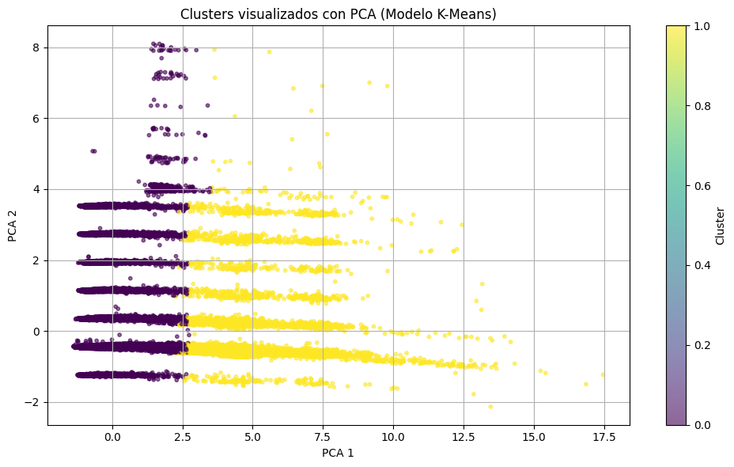
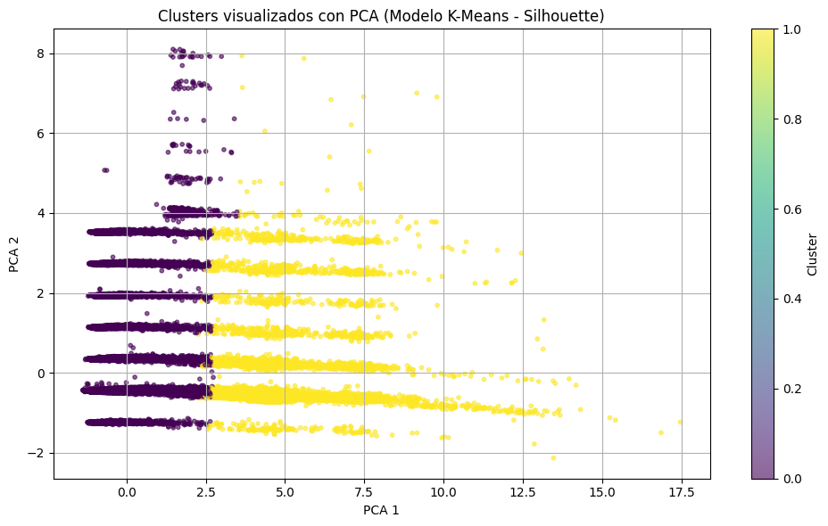
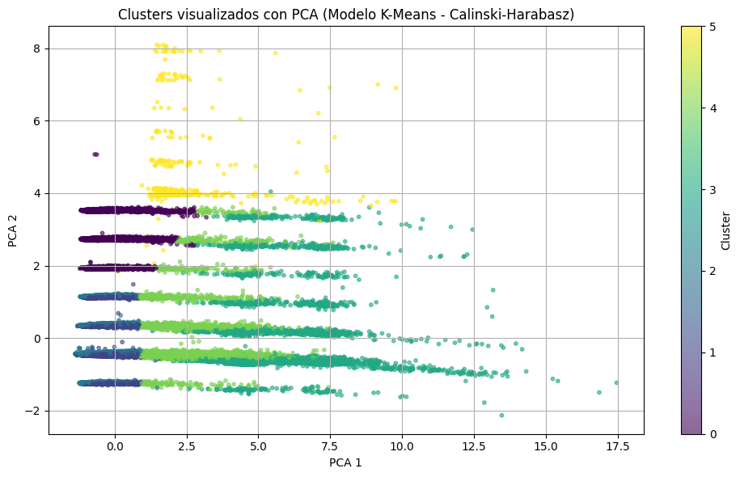

import warnings
warnings.filterwarnings("ignore")
See also
Jupyter Book uses Jupytext to convert text-based files to notebooks, and can support many other text-based notebook files.
Create a notebook with MyST Markdown#
MyST Markdown notebooks are defined by two things:
YAML metadata that is needed to understand if / how it should convert text files to notebooks (including information about the kernel needed). See the YAML at the top of this page for example.
The presence of
{code-cell}directives, which will be executed with your book.
That’s all that is needed to get started!
Quickly add YAML metadata for MyST Notebooks#
If you have a markdown file and you’d like to quickly add YAML metadata to it, so that Jupyter Book will treat it as a MyST Markdown Notebook, run the following command:
jupyter-book myst init path/to/markdownfile.md
Modelos No Supervisados#
En el análisis del conjunto de datos de taxis de NYC, se exploran modelos no supervisados como K-means, DBSCAN y autoencoders para descubrir patrones inherentes y segmentar a los clientes sin depender de etiquetas predefinidas. K-means agrupa los viajes en clústeres basados en la proximidad de sus características, DBSCAN identifica clústeres densos y marca valores atípicos, y los autoencoders aprenden representaciones comprimidas de los datos para revelar estructuras subyacentes. Estas técnicas permiten identificar segmentos de clientes con comportamientos similares, optimizar servicios y mejorar la segmentación de marketing.
Kmeans#
Este código implementa el algoritmo de clustering K-means para segmentar datos de viajes de taxi, buscando patrones inherentes sin etiquetas predefinidas. Primero, selecciona columnas numéricas relevantes y las estandariza para asegurar que todas contribuyan equitativamente al cálculo de distancias. Luego, aplica el “método del codo” para determinar el número óptimo de clústeres, graficando la inercia (suma de distancias cuadradas) para diferentes valores de ‘k’. Finalmente, entrena K-means con el número óptimo de clústeres encontrado y asigna cada viaje a un clúster, añadiendo esta información al DataFrame original para su posterior análisis y visualización.
import pickle
with open('taxi_df.pkl', 'rb') as f:
taxi_df = pickle.load(f)
# seleccion de variabls
print(taxi_df.columns)
Index(['PULocationID', 'DOLocationID', 'Passengers', 'Distance', 'RatecodeID',
'fare_amount', 'total_amount', 'PickUpYear', 'PickUpMonth',
'PickUpWeek', 'PickUpDay', 'PickUpHour', 'PickUpDayWeek',
'payment_type', 'tolls_amount', 'Duration', 'Zone_pickup',
'Zone_dropoff', 'Duration_seconds', 'Duration_minutes',
'Duration_range', 'Amount_range'],
dtype='object')
# DataFrame con las variables seleccionadas para los modelos de clustering
variables_clustering = [
'total_amount',
'Distance',
'Passengers',
'tolls_amount',
'Duration_seconds',
'payment_type',
'RatecodeID'
]
# Crear una copia con solo esas columnas
df_clustering = taxi_df[variables_clustering].copy()
# Mostrar las primeras filas
df_clustering.head()
| total_amount | Distance | Passengers | tolls_amount | Duration_seconds | payment_type | RatecodeID | |
|---|---|---|---|---|---|---|---|
| 0 | 9.95 | 1.5 | 1.0 | 0.0 | 400.0 | 1 | 1.0 |
| 1 | 16.30 | 2.6 | 1.0 | 0.0 | 1152.0 | 1 | 1.0 |
| 7 | 9.05 | 1.3 | 1.0 | 0.0 | 429.0 | 1 | 1.0 |
| 8 | 18.50 | 3.7 | 1.0 | 0.0 | 818.0 | 1 | 1.0 |
| 9 | 13.00 | 2.1 | 2.0 | 0.0 | 720.0 | 1 | 1.0 |
import pandas as pd
import numpy as np
from sklearn.model_selection import train_test_split, ParameterGrid
from sklearn.preprocessing import StandardScaler, OneHotEncoder
from sklearn.compose import ColumnTransformer
from sklearn.pipeline import Pipeline
from sklearn.metrics import silhouette_score, davies_bouldin_score, calinski_harabasz_score
from sklearn_extra.cluster import KMedoids
import pickle
from tqdm import tqdm
from sklearn.compose import ColumnTransformer
from sklearn.utils import resample
# Variables
numeric_features = ['Distance', 'Passengers', 'tolls_amount', 'Duration_seconds', 'total_amount']
categorical_features = ['payment_type', 'RatecodeID']
# Preprocesador
preprocessor = ColumnTransformer([
('num', StandardScaler(), numeric_features),
('cat', OneHotEncoder(handle_unknown='ignore'), categorical_features)
])
X = df_clustering[numeric_features + categorical_features]
X_transf = preprocessor.fit_transform(X)
X_sample = resample(X_transf, n_samples=150000, random_state=42)
GridSearchCV incorporando el Davies-Bouldin#
from sklearn.model_selection import GridSearchCV
from sklearn.cluster import KMeans
from sklearn.metrics import davies_bouldin_score
import time
import numpy as np
# Suponiendo que tienes X_sample definido
# Definir el rango de parámetros para el ajuste
param_grid = {
'n_clusters': [2, 3, 4, 5, 6],
'init': ['k-means++', 'random'],
'max_iter': [300, 400, 500]
}
# Definir el modelo KMeans
kmeans = KMeans(random_state=42, n_init='auto')
# Definir una función de scoring para Davies-Bouldin (negativo)
def negative_davies_bouldin(estimator, X):
labels = estimator.fit_predict(X)
score = davies_bouldin_score(X, labels)
return -score
# Realizar la búsqueda de hiperparámetros
grid_search = GridSearchCV(kmeans, param_grid, cv=3, scoring=negative_davies_bouldin)
print("Comenzando la búsqueda de hiperparámetros...")
results = []
grid_search.fit(X_sample) # Ajustar GridSearchCV
for i in range(len(grid_search.cv_results_['params'])):
params = grid_search.cv_results_['params'][i]
mean_neg_db = grid_search.cv_results_['mean_test_score'][i]
duration = grid_search.cv_results_['mean_fit_time'][i] + grid_search.cv_results_['mean_score_time'][i]
results.append((params, mean_neg_db, duration))
print(f"Parámetros: {params}, Score Promedio (neg_Davies-Bouldin): {mean_neg_db:.4f}, Tiempo: {duration:.2f} segundos")
# Mostrar todos los resultados
print("\nTodos los resultados de la búsqueda:")
for params, score, duration in results:
print(f"Parámetros: {params}, Score Promedio (neg_Davies-Bouldin): {score:.4f}, Tiempo: {duration:.2f} segundos")
# Mostrar el mejor conjunto de hiperparámetros
print("\nMejores parámetros: ", grid_search.best_params_)
Comenzando la búsqueda de hiperparámetros...
Parámetros: {'init': 'k-means++', 'max_iter': 300, 'n_clusters': 2}, Score Promedio (neg_Davies-Bouldin): -0.5514, Tiempo: 0.09 segundos
Parámetros: {'init': 'k-means++', 'max_iter': 300, 'n_clusters': 3}, Score Promedio (neg_Davies-Bouldin): -0.6333, Tiempo: 0.04 segundos
Parámetros: {'init': 'k-means++', 'max_iter': 300, 'n_clusters': 4}, Score Promedio (neg_Davies-Bouldin): -0.6586, Tiempo: 0.05 segundos
Parámetros: {'init': 'k-means++', 'max_iter': 300, 'n_clusters': 5}, Score Promedio (neg_Davies-Bouldin): -0.6913, Tiempo: 0.07 segundos
Parámetros: {'init': 'k-means++', 'max_iter': 300, 'n_clusters': 6}, Score Promedio (neg_Davies-Bouldin): -0.7532, Tiempo: 0.07 segundos
Parámetros: {'init': 'k-means++', 'max_iter': 400, 'n_clusters': 2}, Score Promedio (neg_Davies-Bouldin): -0.5514, Tiempo: 0.04 segundos
Parámetros: {'init': 'k-means++', 'max_iter': 400, 'n_clusters': 3}, Score Promedio (neg_Davies-Bouldin): -0.6333, Tiempo: 0.05 segundos
Parámetros: {'init': 'k-means++', 'max_iter': 400, 'n_clusters': 4}, Score Promedio (neg_Davies-Bouldin): -0.6586, Tiempo: 0.05 segundos
Parámetros: {'init': 'k-means++', 'max_iter': 400, 'n_clusters': 5}, Score Promedio (neg_Davies-Bouldin): -0.6913, Tiempo: 0.06 segundos
Parámetros: {'init': 'k-means++', 'max_iter': 400, 'n_clusters': 6}, Score Promedio (neg_Davies-Bouldin): -0.7532, Tiempo: 0.07 segundos
Parámetros: {'init': 'k-means++', 'max_iter': 500, 'n_clusters': 2}, Score Promedio (neg_Davies-Bouldin): -0.5514, Tiempo: 0.04 segundos
Parámetros: {'init': 'k-means++', 'max_iter': 500, 'n_clusters': 3}, Score Promedio (neg_Davies-Bouldin): -0.6333, Tiempo: 0.05 segundos
Parámetros: {'init': 'k-means++', 'max_iter': 500, 'n_clusters': 4}, Score Promedio (neg_Davies-Bouldin): -0.6586, Tiempo: 0.05 segundos
Parámetros: {'init': 'k-means++', 'max_iter': 500, 'n_clusters': 5}, Score Promedio (neg_Davies-Bouldin): -0.6913, Tiempo: 0.06 segundos
Parámetros: {'init': 'k-means++', 'max_iter': 500, 'n_clusters': 6}, Score Promedio (neg_Davies-Bouldin): -0.7532, Tiempo: 0.07 segundos
Parámetros: {'init': 'random', 'max_iter': 300, 'n_clusters': 2}, Score Promedio (neg_Davies-Bouldin): -0.7254, Tiempo: 0.13 segundos
Parámetros: {'init': 'random', 'max_iter': 300, 'n_clusters': 3}, Score Promedio (neg_Davies-Bouldin): -0.8062, Tiempo: 0.15 segundos
Parámetros: {'init': 'random', 'max_iter': 300, 'n_clusters': 4}, Score Promedio (neg_Davies-Bouldin): -0.8251, Tiempo: 0.17 segundos
Parámetros: {'init': 'random', 'max_iter': 300, 'n_clusters': 5}, Score Promedio (neg_Davies-Bouldin): -0.7777, Tiempo: 0.23 segundos
Parámetros: {'init': 'random', 'max_iter': 300, 'n_clusters': 6}, Score Promedio (neg_Davies-Bouldin): -0.6939, Tiempo: 0.26 segundos
Parámetros: {'init': 'random', 'max_iter': 400, 'n_clusters': 2}, Score Promedio (neg_Davies-Bouldin): -0.7254, Tiempo: 0.12 segundos
Parámetros: {'init': 'random', 'max_iter': 400, 'n_clusters': 3}, Score Promedio (neg_Davies-Bouldin): -0.8062, Tiempo: 0.15 segundos
Parámetros: {'init': 'random', 'max_iter': 400, 'n_clusters': 4}, Score Promedio (neg_Davies-Bouldin): -0.8251, Tiempo: 0.18 segundos
Parámetros: {'init': 'random', 'max_iter': 400, 'n_clusters': 5}, Score Promedio (neg_Davies-Bouldin): -0.7777, Tiempo: 0.23 segundos
Parámetros: {'init': 'random', 'max_iter': 400, 'n_clusters': 6}, Score Promedio (neg_Davies-Bouldin): -0.6939, Tiempo: 0.26 segundos
Parámetros: {'init': 'random', 'max_iter': 500, 'n_clusters': 2}, Score Promedio (neg_Davies-Bouldin): -0.7254, Tiempo: 0.12 segundos
Parámetros: {'init': 'random', 'max_iter': 500, 'n_clusters': 3}, Score Promedio (neg_Davies-Bouldin): -0.8062, Tiempo: 0.15 segundos
Parámetros: {'init': 'random', 'max_iter': 500, 'n_clusters': 4}, Score Promedio (neg_Davies-Bouldin): -0.8251, Tiempo: 0.17 segundos
Parámetros: {'init': 'random', 'max_iter': 500, 'n_clusters': 5}, Score Promedio (neg_Davies-Bouldin): -0.7777, Tiempo: 0.23 segundos
Parámetros: {'init': 'random', 'max_iter': 500, 'n_clusters': 6}, Score Promedio (neg_Davies-Bouldin): -0.6939, Tiempo: 0.26 segundos
Todos los resultados de la búsqueda:
Parámetros: {'init': 'k-means++', 'max_iter': 300, 'n_clusters': 2}, Score Promedio (neg_Davies-Bouldin): -0.5514, Tiempo: 0.09 segundos
Parámetros: {'init': 'k-means++', 'max_iter': 300, 'n_clusters': 3}, Score Promedio (neg_Davies-Bouldin): -0.6333, Tiempo: 0.04 segundos
Parámetros: {'init': 'k-means++', 'max_iter': 300, 'n_clusters': 4}, Score Promedio (neg_Davies-Bouldin): -0.6586, Tiempo: 0.05 segundos
Parámetros: {'init': 'k-means++', 'max_iter': 300, 'n_clusters': 5}, Score Promedio (neg_Davies-Bouldin): -0.6913, Tiempo: 0.07 segundos
Parámetros: {'init': 'k-means++', 'max_iter': 300, 'n_clusters': 6}, Score Promedio (neg_Davies-Bouldin): -0.7532, Tiempo: 0.07 segundos
Parámetros: {'init': 'k-means++', 'max_iter': 400, 'n_clusters': 2}, Score Promedio (neg_Davies-Bouldin): -0.5514, Tiempo: 0.04 segundos
Parámetros: {'init': 'k-means++', 'max_iter': 400, 'n_clusters': 3}, Score Promedio (neg_Davies-Bouldin): -0.6333, Tiempo: 0.05 segundos
Parámetros: {'init': 'k-means++', 'max_iter': 400, 'n_clusters': 4}, Score Promedio (neg_Davies-Bouldin): -0.6586, Tiempo: 0.05 segundos
Parámetros: {'init': 'k-means++', 'max_iter': 400, 'n_clusters': 5}, Score Promedio (neg_Davies-Bouldin): -0.6913, Tiempo: 0.06 segundos
Parámetros: {'init': 'k-means++', 'max_iter': 400, 'n_clusters': 6}, Score Promedio (neg_Davies-Bouldin): -0.7532, Tiempo: 0.07 segundos
Parámetros: {'init': 'k-means++', 'max_iter': 500, 'n_clusters': 2}, Score Promedio (neg_Davies-Bouldin): -0.5514, Tiempo: 0.04 segundos
Parámetros: {'init': 'k-means++', 'max_iter': 500, 'n_clusters': 3}, Score Promedio (neg_Davies-Bouldin): -0.6333, Tiempo: 0.05 segundos
Parámetros: {'init': 'k-means++', 'max_iter': 500, 'n_clusters': 4}, Score Promedio (neg_Davies-Bouldin): -0.6586, Tiempo: 0.05 segundos
Parámetros: {'init': 'k-means++', 'max_iter': 500, 'n_clusters': 5}, Score Promedio (neg_Davies-Bouldin): -0.6913, Tiempo: 0.06 segundos
Parámetros: {'init': 'k-means++', 'max_iter': 500, 'n_clusters': 6}, Score Promedio (neg_Davies-Bouldin): -0.7532, Tiempo: 0.07 segundos
Parámetros: {'init': 'random', 'max_iter': 300, 'n_clusters': 2}, Score Promedio (neg_Davies-Bouldin): -0.7254, Tiempo: 0.13 segundos
Parámetros: {'init': 'random', 'max_iter': 300, 'n_clusters': 3}, Score Promedio (neg_Davies-Bouldin): -0.8062, Tiempo: 0.15 segundos
Parámetros: {'init': 'random', 'max_iter': 300, 'n_clusters': 4}, Score Promedio (neg_Davies-Bouldin): -0.8251, Tiempo: 0.17 segundos
Parámetros: {'init': 'random', 'max_iter': 300, 'n_clusters': 5}, Score Promedio (neg_Davies-Bouldin): -0.7777, Tiempo: 0.23 segundos
Parámetros: {'init': 'random', 'max_iter': 300, 'n_clusters': 6}, Score Promedio (neg_Davies-Bouldin): -0.6939, Tiempo: 0.26 segundos
Parámetros: {'init': 'random', 'max_iter': 400, 'n_clusters': 2}, Score Promedio (neg_Davies-Bouldin): -0.7254, Tiempo: 0.12 segundos
Parámetros: {'init': 'random', 'max_iter': 400, 'n_clusters': 3}, Score Promedio (neg_Davies-Bouldin): -0.8062, Tiempo: 0.15 segundos
Parámetros: {'init': 'random', 'max_iter': 400, 'n_clusters': 4}, Score Promedio (neg_Davies-Bouldin): -0.8251, Tiempo: 0.18 segundos
Parámetros: {'init': 'random', 'max_iter': 400, 'n_clusters': 5}, Score Promedio (neg_Davies-Bouldin): -0.7777, Tiempo: 0.23 segundos
Parámetros: {'init': 'random', 'max_iter': 400, 'n_clusters': 6}, Score Promedio (neg_Davies-Bouldin): -0.6939, Tiempo: 0.26 segundos
Parámetros: {'init': 'random', 'max_iter': 500, 'n_clusters': 2}, Score Promedio (neg_Davies-Bouldin): -0.7254, Tiempo: 0.12 segundos
Parámetros: {'init': 'random', 'max_iter': 500, 'n_clusters': 3}, Score Promedio (neg_Davies-Bouldin): -0.8062, Tiempo: 0.15 segundos
Parámetros: {'init': 'random', 'max_iter': 500, 'n_clusters': 4}, Score Promedio (neg_Davies-Bouldin): -0.8251, Tiempo: 0.17 segundos
Parámetros: {'init': 'random', 'max_iter': 500, 'n_clusters': 5}, Score Promedio (neg_Davies-Bouldin): -0.7777, Tiempo: 0.23 segundos
Parámetros: {'init': 'random', 'max_iter': 500, 'n_clusters': 6}, Score Promedio (neg_Davies-Bouldin): -0.6939, Tiempo: 0.26 segundos
Mejores parámetros: {'init': 'k-means++', 'max_iter': 300, 'n_clusters': 2}
Implementacion K-Means (Davies-Bouldin)#
from sklearn.cluster import KMeans
from sklearn.metrics import silhouette_score, davies_bouldin_score, calinski_harabasz_score
# Crear el modelo con los mejores parámetros encontrados por MSE
kmeans_davies = KMeans(n_clusters=2, init='k-means++', max_iter=300, random_state=42)
# Entrenar el modelo
kmeans_davies.fit(X_sample)
# Obtener las etiquetas del modelo basado en MSE
labels_davies = kmeans_davies.labels_
# Calcular métricas
silhouette_mse = silhouette_score(X_sample, labels_davies)
davies_bouldin_mse = davies_bouldin_score(X_sample, labels_davies)
calinski_harabasz_mse = calinski_harabasz_score(X_sample, labels_davies)
# Imprimir resultados
print(f"Silhouette Score (MSE): {silhouette_mse:.4f}")
print(f"Davies-Bouldin Score (MSE): {davies_bouldin_mse:.4f}")
print(f"Calinski-Harabasz Score (MSE): {calinski_harabasz_mse:.4f}")
Silhouette Score (MSE): 0.7129
Davies-Bouldin Score (MSE): 0.7252
Calinski-Harabasz Score (MSE): 86988.6291
GridSearchCV incorporando el Silhouette#
from sklearn.model_selection import GridSearchCV
from sklearn.cluster import KMeans
from sklearn.metrics import silhouette_score
import numpy as np
import pandas as pd
# Suponiendo que tienes X_sample definido
# Definir el rango de parámetros para el ajuste
param_grid = {
'n_clusters': [2, 3, 4, 5, 6],
'init': ['k-means++', 'random'],
'max_iter': [300, 400, 500]
}
# Definir el modelo base
kmeans = KMeans(random_state=42, n_init='auto')
# Función de scoring personalizada para Silhouette
def silhouette_scorer(estimator, X):
labels = estimator.fit_predict(X)
return silhouette_score(X, labels)
# Configurar GridSearchCV
grid_search = GridSearchCV(
estimator=kmeans,
param_grid=param_grid,
scoring=silhouette_scorer,
cv=3,
verbose=1, # Esto muestra el progreso en consola
n_jobs=-1 # Usa todos los núcleos disponibles
)
print(" Comenzando la búsqueda de hiperparámetros...\n")
grid_search.fit(X_sample)
# Mostrar mejores parámetros
print("\n Mejores parámetros encontrados:")
print(grid_search.best_params_)
# -------------------------------------------
# Mostrar tabla completa de resultados
# -------------------------------------------
print("\n Resultados completos ordenados por mejor score:\n")
# Crear DataFrame con resultados
results_df = pd.DataFrame(grid_search.cv_results_)
# Seleccionar columnas útiles
columns_to_show = ['params', 'mean_test_score', 'std_test_score', 'mean_fit_time', 'mean_score_time']
results_df = results_df[columns_to_show]
# Ordenar por mayor Silhouette Score
results_df_sorted = results_df.sort_values(by='mean_test_score', ascending=False)
# Mostrar todo
pd.set_option('display.max_rows', None) # Mostrar todas las filas
print(results_df_sorted)
Comenzando la búsqueda de hiperparámetros...
Fitting 3 folds for each of 30 candidates, totalling 90 fits
---------------------------------------------------------------------------
KeyboardInterrupt Traceback (most recent call last)
File ~\miniconda3\envs\ml_venv\lib\site-packages\joblib\parallel.py:1650, in Parallel._get_outputs(self, iterator, pre_dispatch)
1649 with self._backend.retrieval_context():
-> 1650 yield from self._retrieve()
1652 except GeneratorExit:
1653 # The generator has been garbage collected before being fully
1654 # consumed. This aborts the remaining tasks if possible and warn
1655 # the user if necessary.
File ~\miniconda3\envs\ml_venv\lib\site-packages\joblib\parallel.py:1762, in Parallel._retrieve(self)
1759 if ((len(self._jobs) == 0) or
1760 (self._jobs[0].get_status(
1761 timeout=self.timeout) == TASK_PENDING)):
-> 1762 time.sleep(0.01)
1763 continue
KeyboardInterrupt:
During handling of the above exception, another exception occurred:
OSError Traceback (most recent call last)
File ~\miniconda3\envs\ml_venv\lib\site-packages\sklearn\model_selection\_search.py:1024, in BaseSearchCV.fit(self, X, y, **params)
1022 return results
-> 1024 self._run_search(evaluate_candidates)
1026 # multimetric is determined here because in the case of a callable
1027 # self.scoring the return type is only known after calling
File ~\miniconda3\envs\ml_venv\lib\site-packages\sklearn\model_selection\_search.py:1571, in GridSearchCV._run_search(self, evaluate_candidates)
1570 """Search all candidates in param_grid"""
-> 1571 evaluate_candidates(ParameterGrid(self.param_grid))
File ~\miniconda3\envs\ml_venv\lib\site-packages\sklearn\model_selection\_search.py:970, in BaseSearchCV.fit.<locals>.evaluate_candidates(candidate_params, cv, more_results)
963 print(
964 "Fitting {0} folds for each of {1} candidates,"
965 " totalling {2} fits".format(
966 n_splits, n_candidates, n_candidates * n_splits
967 )
968 )
--> 970 out = parallel(
971 delayed(_fit_and_score)(
972 clone(base_estimator),
973 X,
974 y,
975 train=train,
976 test=test,
977 parameters=parameters,
978 split_progress=(split_idx, n_splits),
979 candidate_progress=(cand_idx, n_candidates),
980 **fit_and_score_kwargs,
981 )
982 for (cand_idx, parameters), (split_idx, (train, test)) in product(
983 enumerate(candidate_params),
984 enumerate(cv.split(X, y, **routed_params.splitter.split)),
985 )
986 )
988 if len(out) < 1:
File ~\miniconda3\envs\ml_venv\lib\site-packages\sklearn\utils\parallel.py:77, in Parallel.__call__(self, iterable)
73 iterable_with_config = (
74 (_with_config(delayed_func, config), args, kwargs)
75 for delayed_func, args, kwargs in iterable
76 )
---> 77 return super().__call__(iterable_with_config)
File ~\miniconda3\envs\ml_venv\lib\site-packages\joblib\parallel.py:2007, in Parallel.__call__(self, iterable)
2005 next(output)
-> 2007 return output if self.return_generator else list(output)
File ~\miniconda3\envs\ml_venv\lib\site-packages\joblib\parallel.py:1703, in Parallel._get_outputs(self, iterator, pre_dispatch)
1702 self._exception = True
-> 1703 self._abort()
1704 raise
File ~\miniconda3\envs\ml_venv\lib\site-packages\joblib\parallel.py:1614, in Parallel._abort(self)
1613 ensure_ready = self._managed_backend
-> 1614 backend.abort_everything(ensure_ready=ensure_ready)
1615 self._aborted = True
File ~\miniconda3\envs\ml_venv\lib\site-packages\joblib\_parallel_backends.py:620, in LokyBackend.abort_everything(self, ensure_ready)
618 """Shutdown the workers and restart a new one with the same parameters
619 """
--> 620 self._workers.terminate(kill_workers=True)
621 self._workers = None
File ~\miniconda3\envs\ml_venv\lib\site-packages\joblib\executor.py:87, in MemmappingExecutor.terminate(self, kill_workers)
86 with self._submit_resize_lock:
---> 87 self._temp_folder_manager._clean_temporary_resources(
88 force=kill_workers, allow_non_empty=True
89 )
File ~\miniconda3\envs\ml_venv\lib\site-packages\joblib\_memmapping_reducer.py:615, in TemporaryResourcesManager._clean_temporary_resources(self, context_id, force, allow_non_empty)
614 for context_id in list(self._cached_temp_folders):
--> 615 self._clean_temporary_resources(
616 context_id, force=force, allow_non_empty=allow_non_empty
617 )
618 else:
File ~\miniconda3\envs\ml_venv\lib\site-packages\joblib\_memmapping_reducer.py:626, in TemporaryResourcesManager._clean_temporary_resources(self, context_id, force, allow_non_empty)
622 if force:
623 # Some workers have failed and the ref counted might
624 # be off. The workers should have shut down by this
625 # time so forcefully clean up the files.
--> 626 resource_tracker.unregister(
627 os.path.join(temp_folder, filename), "file"
628 )
629 else:
File ~\miniconda3\envs\ml_venv\lib\site-packages\joblib\externals\loky\backend\resource_tracker.py:183, in ResourceTracker.unregister(self, name, rtype)
182 """Unregister a named resource with resource tracker."""
--> 183 self.ensure_running()
184 self._send("UNREGISTER", name, rtype)
File ~\miniconda3\envs\ml_venv\lib\site-packages\joblib\externals\loky\backend\resource_tracker.py:95, in ResourceTracker.ensure_running(self)
93 if self._fd is not None:
94 # resource tracker was launched before, is it still running?
---> 95 if self._check_alive():
96 # => still alive
97 return
File ~\miniconda3\envs\ml_venv\lib\site-packages\joblib\externals\loky\backend\resource_tracker.py:170, in ResourceTracker._check_alive(self)
169 try:
--> 170 self._send("PROBE", "", "")
171 except BrokenPipeError:
File ~\miniconda3\envs\ml_venv\lib\site-packages\joblib\externals\loky\backend\resource_tracker.py:197, in ResourceTracker._send(self, cmd, name, rtype)
196 msg = f"{cmd}:{name}:{rtype}\n".encode("ascii")
--> 197 nbytes = os.write(self._fd, msg)
198 assert nbytes == len(msg)
OSError: [Errno 22] Invalid argument
During handling of the above exception, another exception occurred:
OSError Traceback (most recent call last)
Cell In[11], line 35
25 grid_search = GridSearchCV(
26 estimator=kmeans,
27 param_grid=param_grid,
(...)
31 n_jobs=-1 # Usa todos los núcleos disponibles
32 )
34 print(" Comenzando la búsqueda de hiperparámetros...\n")
---> 35 grid_search.fit(X_sample)
37 # Mostrar mejores parámetros
38 print("\n Mejores parámetros encontrados:")
File ~\miniconda3\envs\ml_venv\lib\site-packages\sklearn\base.py:1389, in _fit_context.<locals>.decorator.<locals>.wrapper(estimator, *args, **kwargs)
1382 estimator._validate_params()
1384 with config_context(
1385 skip_parameter_validation=(
1386 prefer_skip_nested_validation or global_skip_validation
1387 )
1388 ):
-> 1389 return fit_method(estimator, *args, **kwargs)
File ~\miniconda3\envs\ml_venv\lib\site-packages\sklearn\model_selection\_search.py:1034, in BaseSearchCV.fit(self, X, y, **params)
1032 if callable(self.scoring) and self.multimetric_:
1033 self._check_refit_for_multimetric(first_test_score)
-> 1034 refit_metric = self.refit
1036 # For multi-metric evaluation, store the best_index_, best_params_ and
1037 # best_score_ iff refit is one of the scorer names
1038 # In single metric evaluation, refit_metric is "score"
1039 if self.refit or not self.multimetric_:
File ~\miniconda3\envs\ml_venv\lib\site-packages\joblib\parallel.py:1354, in Parallel.__exit__(self, exc_type, exc_value, traceback)
1352 if self.return_generator and self._calling:
1353 self._abort()
-> 1354 self._terminate_and_reset()
File ~\miniconda3\envs\ml_venv\lib\site-packages\joblib\parallel.py:1386, in Parallel._terminate_and_reset(self)
1384 self._calling = False
1385 if not self._managed_backend:
-> 1386 self._backend.terminate()
File ~\miniconda3\envs\ml_venv\lib\site-packages\joblib\_parallel_backends.py:610, in LokyBackend.terminate(self)
605 def terminate(self):
606 if self._workers is not None:
607 # Don't terminate the workers as we want to reuse them in later
608 # calls, but cleanup the temporary resources that the Parallel call
609 # created. This 'hack' requires a private, low-level operation.
--> 610 self._workers._temp_folder_manager._clean_temporary_resources(
611 context_id=self.parallel._id, force=False
612 )
613 self._workers = None
615 self.reset_batch_stats()
File ~\miniconda3\envs\ml_venv\lib\site-packages\joblib\_memmapping_reducer.py:630, in TemporaryResourcesManager._clean_temporary_resources(self, context_id, force, allow_non_empty)
626 resource_tracker.unregister(
627 os.path.join(temp_folder, filename), "file"
628 )
629 else:
--> 630 resource_tracker.maybe_unlink(
631 os.path.join(temp_folder, filename), "file"
632 )
634 # When forcing clean-up, try to delete the folder even if some
635 # files are still in it. Otherwise, try to delete the folder
636 allow_non_empty |= force
File ~\miniconda3\envs\ml_venv\lib\site-packages\joblib\externals\loky\backend\resource_tracker.py:188, in ResourceTracker.maybe_unlink(self, name, rtype)
186 def maybe_unlink(self, name, rtype):
187 """Decrement the refcount of a resource, and delete it if it hits 0"""
--> 188 self.ensure_running()
189 self._send("MAYBE_UNLINK", name, rtype)
File ~\miniconda3\envs\ml_venv\lib\site-packages\joblib\externals\loky\backend\resource_tracker.py:95, in ResourceTracker.ensure_running(self)
92 with self._lock:
93 if self._fd is not None:
94 # resource tracker was launched before, is it still running?
---> 95 if self._check_alive():
96 # => still alive
97 return
98 # => dead, launch it again
File ~\miniconda3\envs\ml_venv\lib\site-packages\joblib\externals\loky\backend\resource_tracker.py:170, in ResourceTracker._check_alive(self)
168 """Check for the existence of the resource tracker process."""
169 try:
--> 170 self._send("PROBE", "", "")
171 except BrokenPipeError:
172 return False
File ~\miniconda3\envs\ml_venv\lib\site-packages\joblib\externals\loky\backend\resource_tracker.py:197, in ResourceTracker._send(self, cmd, name, rtype)
195 raise ValueError("name too long")
196 msg = f"{cmd}:{name}:{rtype}\n".encode("ascii")
--> 197 nbytes = os.write(self._fd, msg)
198 assert nbytes == len(msg)
OSError: [Errno 22] Invalid argument
Implementacion K-Means (Silhouette)#
from sklearn.cluster import KMeans
from sklearn.metrics import silhouette_score, davies_bouldin_score, calinski_harabasz_score
# Extraer mejores parámetros desde grid_search
best_params = grid_search.best_params_
# Crear el modelo con los mejores parámetros
kmeans_silhouette = KMeans(
n_clusters=best_params['n_clusters'],
init=best_params['init'],
max_iter=best_params['max_iter'],
random_state=42,
n_init='auto'
)
# Entrenar el modelo
kmeans_silhouette.fit(X_sample)
# Obtener las etiquetas del modelo
labels_silhouette = kmeans_silhouette.labels_
# Calcular métricas
silhouette_final = silhouette_score(X_sample, labels_silhouette)
davies_bouldin_final = davies_bouldin_score(X_sample, labels_silhouette)
calinski_harabasz_final = calinski_harabasz_score(X_sample, labels_silhouette)
# Imprimir resultados
print(f"Silhouette Score (final): {silhouette_final:.4f}")
print(f"Davies-Bouldin Score (final): {davies_bouldin_final:.4f}")
print(f"Calinski-Harabasz Score (final): {calinski_harabasz_final:.4f}")
Silhouette Score (final): 0.7129
Davies-Bouldin Score (final): 0.7252
Calinski-Harabasz Score (final): 86988.6291
GridSearchCV incorporando Calinski-Harabasz#
from sklearn.model_selection import GridSearchCV
from sklearn.cluster import KMeans
from sklearn.metrics import calinski_harabasz_score
import numpy as np
# Definir el rango de parámetros para el ajuste
param_grid = {
'n_clusters': [2, 3, 4, 5, 6],
'init': ['k-means++', 'random'],
'max_iter': [300, 400, 500]
}
# Definir el modelo KMeans
kmeans = KMeans(random_state=42, n_init='auto')
# Definir función de scoring con Calinski-Harabasz
def calinski_harabasz_scorer(estimator, X):
labels = estimator.fit_predict(X)
score = calinski_harabasz_score(X, labels)
return score # Se maximiza
# Realizar la búsqueda de hiperparámetros con uso de todos los núcleos
grid_search = GridSearchCV(
estimator=kmeans,
param_grid=param_grid,
cv=3,
scoring=calinski_harabasz_scorer,
n_jobs=-1, # Usa todos los núcleos disponibles
verbose=2 # Opcional: para ver qué está haciendo en tiempo real
)
print("Comenzando la búsqueda de hiperparámetros...")
results = []
grid_search.fit(X_sample) # Ajustar GridSearchCV
for i in range(len(grid_search.cv_results_['params'])):
params = grid_search.cv_results_['params'][i]
mean_ch = grid_search.cv_results_['mean_test_score'][i]
duration = grid_search.cv_results_['mean_fit_time'][i] + grid_search.cv_results_['mean_score_time'][i]
results.append((params, mean_ch, duration))
print(f"Parámetros: {params}, Score Promedio (Calinski-Harabasz): {mean_ch:.4f}, Tiempo: {duration:.2f} segundos")
# Mostrar todos los resultados
print("\nTodos los resultados de la búsqueda:")
for params, score, duration in results:
print(f"Parámetros: {params}, Score Promedio (Calinski-Harabasz): {score:.4f}, Tiempo: {duration:.2f} segundos")
# Mostrar el mejor conjunto de hiperparámetros
print("\nMejores parámetros: ", grid_search.best_params_)
Comenzando la búsqueda de hiperparámetros...
Fitting 3 folds for each of 30 candidates, totalling 90 fits
Parámetros: {'init': 'k-means++', 'max_iter': 300, 'n_clusters': 2}, Score Promedio (Calinski-Harabasz): 22655.3701, Tiempo: 0.21 segundos
Parámetros: {'init': 'k-means++', 'max_iter': 300, 'n_clusters': 3}, Score Promedio (Calinski-Harabasz): 28406.8834, Tiempo: 0.32 segundos
Parámetros: {'init': 'k-means++', 'max_iter': 300, 'n_clusters': 4}, Score Promedio (Calinski-Harabasz): 32103.1283, Tiempo: 0.26 segundos
Parámetros: {'init': 'k-means++', 'max_iter': 300, 'n_clusters': 5}, Score Promedio (Calinski-Harabasz): 36640.7579, Tiempo: 0.39 segundos
Parámetros: {'init': 'k-means++', 'max_iter': 300, 'n_clusters': 6}, Score Promedio (Calinski-Harabasz): 39394.7964, Tiempo: 0.48 segundos
Parámetros: {'init': 'k-means++', 'max_iter': 400, 'n_clusters': 2}, Score Promedio (Calinski-Harabasz): 22655.3701, Tiempo: 0.19 segundos
Parámetros: {'init': 'k-means++', 'max_iter': 400, 'n_clusters': 3}, Score Promedio (Calinski-Harabasz): 28406.8834, Tiempo: 0.29 segundos
Parámetros: {'init': 'k-means++', 'max_iter': 400, 'n_clusters': 4}, Score Promedio (Calinski-Harabasz): 32103.1283, Tiempo: 0.28 segundos
Parámetros: {'init': 'k-means++', 'max_iter': 400, 'n_clusters': 5}, Score Promedio (Calinski-Harabasz): 36640.7579, Tiempo: 0.31 segundos
Parámetros: {'init': 'k-means++', 'max_iter': 400, 'n_clusters': 6}, Score Promedio (Calinski-Harabasz): 39394.7964, Tiempo: 0.42 segundos
Parámetros: {'init': 'k-means++', 'max_iter': 500, 'n_clusters': 2}, Score Promedio (Calinski-Harabasz): 22655.3701, Tiempo: 0.20 segundos
Parámetros: {'init': 'k-means++', 'max_iter': 500, 'n_clusters': 3}, Score Promedio (Calinski-Harabasz): 28406.8834, Tiempo: 0.27 segundos
Parámetros: {'init': 'k-means++', 'max_iter': 500, 'n_clusters': 4}, Score Promedio (Calinski-Harabasz): 32103.1283, Tiempo: 0.26 segundos
Parámetros: {'init': 'k-means++', 'max_iter': 500, 'n_clusters': 5}, Score Promedio (Calinski-Harabasz): 36640.7579, Tiempo: 0.41 segundos
Parámetros: {'init': 'k-means++', 'max_iter': 500, 'n_clusters': 6}, Score Promedio (Calinski-Harabasz): 39394.7964, Tiempo: 0.43 segundos
Parámetros: {'init': 'random', 'max_iter': 300, 'n_clusters': 2}, Score Promedio (Calinski-Harabasz): 29007.1091, Tiempo: 0.86 segundos
Parámetros: {'init': 'random', 'max_iter': 300, 'n_clusters': 3}, Score Promedio (Calinski-Harabasz): 25524.0865, Tiempo: 1.09 segundos
Parámetros: {'init': 'random', 'max_iter': 300, 'n_clusters': 4}, Score Promedio (Calinski-Harabasz): 28275.7980, Tiempo: 1.39 segundos
Parámetros: {'init': 'random', 'max_iter': 300, 'n_clusters': 5}, Score Promedio (Calinski-Harabasz): 31696.8385, Tiempo: 2.18 segundos
Parámetros: {'init': 'random', 'max_iter': 300, 'n_clusters': 6}, Score Promedio (Calinski-Harabasz): 41687.1613, Tiempo: 2.33 segundos
Parámetros: {'init': 'random', 'max_iter': 400, 'n_clusters': 2}, Score Promedio (Calinski-Harabasz): 29007.1091, Tiempo: 0.86 segundos
Parámetros: {'init': 'random', 'max_iter': 400, 'n_clusters': 3}, Score Promedio (Calinski-Harabasz): 25524.0865, Tiempo: 1.11 segundos
Parámetros: {'init': 'random', 'max_iter': 400, 'n_clusters': 4}, Score Promedio (Calinski-Harabasz): 28275.7980, Tiempo: 1.34 segundos
Parámetros: {'init': 'random', 'max_iter': 400, 'n_clusters': 5}, Score Promedio (Calinski-Harabasz): 31696.8385, Tiempo: 2.09 segundos
Parámetros: {'init': 'random', 'max_iter': 400, 'n_clusters': 6}, Score Promedio (Calinski-Harabasz): 41687.1613, Tiempo: 2.18 segundos
Parámetros: {'init': 'random', 'max_iter': 500, 'n_clusters': 2}, Score Promedio (Calinski-Harabasz): 29007.1091, Tiempo: 0.77 segundos
Parámetros: {'init': 'random', 'max_iter': 500, 'n_clusters': 3}, Score Promedio (Calinski-Harabasz): 25524.0865, Tiempo: 1.07 segundos
Parámetros: {'init': 'random', 'max_iter': 500, 'n_clusters': 4}, Score Promedio (Calinski-Harabasz): 28275.7980, Tiempo: 1.26 segundos
Parámetros: {'init': 'random', 'max_iter': 500, 'n_clusters': 5}, Score Promedio (Calinski-Harabasz): 31696.8385, Tiempo: 1.55 segundos
Parámetros: {'init': 'random', 'max_iter': 500, 'n_clusters': 6}, Score Promedio (Calinski-Harabasz): 41687.1613, Tiempo: 1.49 segundos
Todos los resultados de la búsqueda:
Parámetros: {'init': 'k-means++', 'max_iter': 300, 'n_clusters': 2}, Score Promedio (Calinski-Harabasz): 22655.3701, Tiempo: 0.21 segundos
Parámetros: {'init': 'k-means++', 'max_iter': 300, 'n_clusters': 3}, Score Promedio (Calinski-Harabasz): 28406.8834, Tiempo: 0.32 segundos
Parámetros: {'init': 'k-means++', 'max_iter': 300, 'n_clusters': 4}, Score Promedio (Calinski-Harabasz): 32103.1283, Tiempo: 0.26 segundos
Parámetros: {'init': 'k-means++', 'max_iter': 300, 'n_clusters': 5}, Score Promedio (Calinski-Harabasz): 36640.7579, Tiempo: 0.39 segundos
Parámetros: {'init': 'k-means++', 'max_iter': 300, 'n_clusters': 6}, Score Promedio (Calinski-Harabasz): 39394.7964, Tiempo: 0.48 segundos
Parámetros: {'init': 'k-means++', 'max_iter': 400, 'n_clusters': 2}, Score Promedio (Calinski-Harabasz): 22655.3701, Tiempo: 0.19 segundos
Parámetros: {'init': 'k-means++', 'max_iter': 400, 'n_clusters': 3}, Score Promedio (Calinski-Harabasz): 28406.8834, Tiempo: 0.29 segundos
Parámetros: {'init': 'k-means++', 'max_iter': 400, 'n_clusters': 4}, Score Promedio (Calinski-Harabasz): 32103.1283, Tiempo: 0.28 segundos
Parámetros: {'init': 'k-means++', 'max_iter': 400, 'n_clusters': 5}, Score Promedio (Calinski-Harabasz): 36640.7579, Tiempo: 0.31 segundos
Parámetros: {'init': 'k-means++', 'max_iter': 400, 'n_clusters': 6}, Score Promedio (Calinski-Harabasz): 39394.7964, Tiempo: 0.42 segundos
Parámetros: {'init': 'k-means++', 'max_iter': 500, 'n_clusters': 2}, Score Promedio (Calinski-Harabasz): 22655.3701, Tiempo: 0.20 segundos
Parámetros: {'init': 'k-means++', 'max_iter': 500, 'n_clusters': 3}, Score Promedio (Calinski-Harabasz): 28406.8834, Tiempo: 0.27 segundos
Parámetros: {'init': 'k-means++', 'max_iter': 500, 'n_clusters': 4}, Score Promedio (Calinski-Harabasz): 32103.1283, Tiempo: 0.26 segundos
Parámetros: {'init': 'k-means++', 'max_iter': 500, 'n_clusters': 5}, Score Promedio (Calinski-Harabasz): 36640.7579, Tiempo: 0.41 segundos
Parámetros: {'init': 'k-means++', 'max_iter': 500, 'n_clusters': 6}, Score Promedio (Calinski-Harabasz): 39394.7964, Tiempo: 0.43 segundos
Parámetros: {'init': 'random', 'max_iter': 300, 'n_clusters': 2}, Score Promedio (Calinski-Harabasz): 29007.1091, Tiempo: 0.86 segundos
Parámetros: {'init': 'random', 'max_iter': 300, 'n_clusters': 3}, Score Promedio (Calinski-Harabasz): 25524.0865, Tiempo: 1.09 segundos
Parámetros: {'init': 'random', 'max_iter': 300, 'n_clusters': 4}, Score Promedio (Calinski-Harabasz): 28275.7980, Tiempo: 1.39 segundos
Parámetros: {'init': 'random', 'max_iter': 300, 'n_clusters': 5}, Score Promedio (Calinski-Harabasz): 31696.8385, Tiempo: 2.18 segundos
Parámetros: {'init': 'random', 'max_iter': 300, 'n_clusters': 6}, Score Promedio (Calinski-Harabasz): 41687.1613, Tiempo: 2.33 segundos
Parámetros: {'init': 'random', 'max_iter': 400, 'n_clusters': 2}, Score Promedio (Calinski-Harabasz): 29007.1091, Tiempo: 0.86 segundos
Parámetros: {'init': 'random', 'max_iter': 400, 'n_clusters': 3}, Score Promedio (Calinski-Harabasz): 25524.0865, Tiempo: 1.11 segundos
Parámetros: {'init': 'random', 'max_iter': 400, 'n_clusters': 4}, Score Promedio (Calinski-Harabasz): 28275.7980, Tiempo: 1.34 segundos
Parámetros: {'init': 'random', 'max_iter': 400, 'n_clusters': 5}, Score Promedio (Calinski-Harabasz): 31696.8385, Tiempo: 2.09 segundos
Parámetros: {'init': 'random', 'max_iter': 400, 'n_clusters': 6}, Score Promedio (Calinski-Harabasz): 41687.1613, Tiempo: 2.18 segundos
Parámetros: {'init': 'random', 'max_iter': 500, 'n_clusters': 2}, Score Promedio (Calinski-Harabasz): 29007.1091, Tiempo: 0.77 segundos
Parámetros: {'init': 'random', 'max_iter': 500, 'n_clusters': 3}, Score Promedio (Calinski-Harabasz): 25524.0865, Tiempo: 1.07 segundos
Parámetros: {'init': 'random', 'max_iter': 500, 'n_clusters': 4}, Score Promedio (Calinski-Harabasz): 28275.7980, Tiempo: 1.26 segundos
Parámetros: {'init': 'random', 'max_iter': 500, 'n_clusters': 5}, Score Promedio (Calinski-Harabasz): 31696.8385, Tiempo: 1.55 segundos
Parámetros: {'init': 'random', 'max_iter': 500, 'n_clusters': 6}, Score Promedio (Calinski-Harabasz): 41687.1613, Tiempo: 1.49 segundos
Mejores parámetros: {'init': 'random', 'max_iter': 300, 'n_clusters': 6}
Implementacion K-Means (Calinski-Harabasz)#
from sklearn.cluster import KMeans
from sklearn.metrics import silhouette_score, davies_bouldin_score, calinski_harabasz_score
# Extraer los mejores parámetros del grid search
best_params_ch = grid_search.best_params_
# Crear el modelo con los mejores parámetros
kmeans_ch = KMeans(
n_clusters=best_params_ch['n_clusters'],
init=best_params_ch['init'],
max_iter=best_params_ch['max_iter'],
random_state=42,
n_init='auto'
)
# Entrenar el modelo
kmeans_ch.fit(X_sample)
# Obtener las etiquetas del modelo
labels_ch = kmeans_ch.labels_
# Calcular las métricas
silhouette_ch = silhouette_score(X_sample, labels_ch)
davies_bouldin_ch = davies_bouldin_score(X_sample, labels_ch)
calinski_harabasz_ch = calinski_harabasz_score(X_sample, labels_ch)
# Mostrar métricas
print(f"Silhouette Score (CH): {silhouette_ch:.4f}")
print(f"Davies-Bouldin Score (CH): {davies_bouldin_ch:.4f}")
print(f"Calinski-Harabasz Score (CH): {calinski_harabasz_ch:.4f}")
Silhouette Score (CH): 0.5121
Davies-Bouldin Score (CH): 0.6943
Calinski-Harabasz Score (CH): 125011.9021
GRÁFICAS#
Gráfica Davies-Bouldin
from sklearn.decomposition import PCA
import matplotlib.pyplot as plt
# Aplicar PCA para reducir a 2 dimensiones
pca = PCA(n_components=2)
X_pca = pca.fit_transform(X_sample)
# Usar las etiquetas del modelo ya entrenado
labels = kmeans_davies.labels_
# Graficar los clusters en el nuevo espacio reducido
plt.figure(figsize=(10, 6))
plt.scatter(X_pca[:, 0], X_pca[:, 1], c=labels, cmap='viridis', s=10, alpha=0.6)
plt.xlabel('PCA 1')
plt.ylabel('PCA 2')
plt.title('Clusters visualizados con PCA (Modelo K-Means)')
plt.colorbar(label='Cluster')
plt.grid(True)
plt.tight_layout()
plt.show()

Gráfica Silhouette
from sklearn.decomposition import PCA
import matplotlib.pyplot as plt
# Reducir dimensionalidad con PCA
pca = PCA(n_components=2)
X_pca_silhouette = pca.fit_transform(X_sample)
# Graficar clusters
plt.figure(figsize=(10, 6))
plt.scatter(X_pca_silhouette[:, 0], X_pca_silhouette[:, 1],
c=labels_silhouette, cmap='viridis', s=10, alpha=0.6)
plt.xlabel('PCA 1')
plt.ylabel('PCA 2')
plt.title('Clusters visualizados con PCA (Modelo K-Means - Silhouette)')
plt.colorbar(label='Cluster')
plt.grid(True)
plt.tight_layout()
plt.show()

Gráfica Calinski-Harabasz
from sklearn.decomposition import PCA
import matplotlib.pyplot as plt
# Aplicar PCA a los datos
pca = PCA(n_components=2)
X_pca_ch = pca.fit_transform(X_sample)
# Graficar los clusters
plt.figure(figsize=(10, 6))
plt.scatter(X_pca_ch[:, 0], X_pca_ch[:, 1], c=labels_ch, cmap='viridis', s=10, alpha=0.6)
plt.xlabel('PCA 1')
plt.ylabel('PCA 2')
plt.title('Clusters visualizados con PCA (Modelo K-Means - Calinski-Harabasz)')
plt.colorbar(label='Cluster')
plt.grid(True)
plt.tight_layout()
plt.show()

GRAFICAS TOTAL
import matplotlib.pyplot as plt
from sklearn.decomposition import PCA
# Aplicamos PCA solo una vez a X_sample (mismo espacio para todos)
pca = PCA(n_components=2)
X_pca = pca.fit_transform(X_sample)
# Diccionario con los modelos y etiquetas
modelos = {
'Silhouette': kmeans_silhouette.labels_,
'Davies-Bouldin': kmeans_davies.labels_,
'Calinski-Harabasz': kmeans_ch.labels_
}
# Crear figura con 3 subplots
fig, axs = plt.subplots(1, 3, figsize=(18, 6), sharex=True, sharey=True)
# Recorrer los modelos y graficarlos en subplots
for i, (titulo, labels) in enumerate(modelos.items()):
axs[i].scatter(X_pca[:, 0], X_pca[:, 1], c=labels, cmap='viridis', s=10, alpha=0.6)
axs[i].set_title(f'K-Means ({titulo})')
axs[i].set_xlabel('PCA 1')
axs[i].set_ylabel('PCA 2')
axs[i].grid(True)
plt.suptitle('Comparación de Clusters - PCA (Silhouette vs Davies vs Calinski)', fontsize=16)
plt.tight_layout(rect=[0, 0, 1, 0.95])
plt.show()

DBSCAN#
from sklearn.cluster import DBSCAN
from sklearn.metrics import silhouette_score
from sklearn.model_selection import KFold
import numpy as np
import time
from tqdm import tqdm
# Suponiendo que ya tenés X_sample (tus datos ya escalados o preprocesados)
# Por ejemplo:
# from sklearn.datasets import make_moons
# from sklearn.preprocessing import StandardScaler
# X_sample, _ = make_moons(n_samples=500, noise=0.05)
# X_sample = StandardScaler().fit_transform(X_sample)
# Definir el rango de parámetros para DBSCAN
param_grid_dbscan = [
{'eps': eps, 'min_samples': min_samples}
for eps in np.arange(0.1, 1.0, 0.1)
for min_samples in range(5, 50, 5)
]
# Objeto para dividir los datos en 3 folds
kf = KFold(n_splits=3, shuffle=True, random_state=42)
results_dbscan = []
print(" Comenzando la búsqueda de hiperparámetros para DBSCAN...\n")
for params in tqdm(param_grid_dbscan, desc="Buscando"):
scores = []
fit_times = []
score_times = []
for train_index, val_index in kf.split(X_sample):
X_train, X_val = X_sample[train_index], X_sample[val_index]
start_fit = time.time()
dbscan_temp = DBSCAN(**params)
labels_train = dbscan_temp.fit_predict(X_train)
fit_times.append(time.time() - start_fit)
start_score = time.time()
score = -1
if len(np.unique(labels_train)) > 1:
labels_val = dbscan_temp.fit_predict(X_val)
if len(np.unique(labels_val)) > 1:
score = silhouette_score(X_val, labels_val)
scores.append(score)
score_times.append(time.time() - start_score)
mean_silhouette = np.mean(scores)
mean_fit_time = np.mean(fit_times)
mean_score_time = np.mean(score_times)
duration = mean_fit_time + mean_score_time
results_dbscan.append((params, mean_silhouette, duration))
tqdm.write(f"Parámetros: {params}, Silhouette Score Promedio: {mean_silhouette:.4f}, Tiempo total: {duration:.2f} segundos")
# Mostrar todos los resultados
print("\n Resultados de la búsqueda:")
for params, score, duration in results_dbscan:
print(f"Parámetros: {params}, Silhouette Score Promedio: {score:.4f}, Tiempo: {duration:.2f} s")
# Obtener los mejores parámetros
best_result = max(results_dbscan, key=lambda x: x[1])
best_params_dbscan = best_result[0]
best_score_dbscan = best_result[1]
print("\n Mejores parámetros encontrados para DBSCAN:")
print(f"Parámetros: {best_params_dbscan}")
print(f" Mejor Silhouette Score: {best_score_dbscan:.4f}")
🔍 Comenzando la búsqueda de hiperparámetros para DBSCAN...
Buscando: 1%| | 1/81 [02:17<3:03:33, 137.66s/it]
Parámetros: {'eps': 0.1, 'min_samples': 5}, Silhouette Score Promedio: 0.2037, Tiempo total: 45.88 segundos
Buscando: 2%|▏ | 2/81 [04:40<3:05:06, 140.59s/it]
Parámetros: {'eps': 0.1, 'min_samples': 10}, Silhouette Score Promedio: 0.2618, Tiempo total: 47.54 segundos
Buscando: 4%|▎ | 3/81 [07:03<3:04:15, 141.73s/it]
Parámetros: {'eps': 0.1, 'min_samples': 15}, Silhouette Score Promedio: 0.2622, Tiempo total: 47.68 segundos
Buscando: 5%|▍ | 4/81 [09:25<3:02:06, 141.91s/it]
Parámetros: {'eps': 0.1, 'min_samples': 20}, Silhouette Score Promedio: 0.2805, Tiempo total: 47.38 segundos
Buscando: 6%|▌ | 5/81 [11:45<2:58:53, 141.23s/it]
Parámetros: {'eps': 0.1, 'min_samples': 25}, Silhouette Score Promedio: 0.2889, Tiempo total: 46.67 segundos
Buscando: 7%|▋ | 6/81 [14:03<2:55:10, 140.14s/it]
Parámetros: {'eps': 0.1, 'min_samples': 30}, Silhouette Score Promedio: 0.2600, Tiempo total: 46.00 segundos
Buscando: 9%|▊ | 7/81 [16:20<2:51:32, 139.09s/it]
Parámetros: {'eps': 0.1, 'min_samples': 35}, Silhouette Score Promedio: 0.3026, Tiempo total: 45.63 segundos
Buscando: 10%|▉ | 8/81 [18:37<2:48:26, 138.45s/it]
Parámetros: {'eps': 0.1, 'min_samples': 40}, Silhouette Score Promedio: 0.3185, Tiempo total: 45.67 segundos
Buscando: 11%|█ | 9/81 [20:52<2:44:58, 137.48s/it]
Parámetros: {'eps': 0.1, 'min_samples': 45}, Silhouette Score Promedio: 0.3252, Tiempo total: 45.11 segundos
Buscando: 12%|█▏ | 10/81 [24:01<3:01:18, 153.22s/it]
Parámetros: {'eps': 0.2, 'min_samples': 5}, Silhouette Score Promedio: 0.2574, Tiempo total: 62.82 segundos
Buscando: 14%|█▎ | 11/81 [27:09<3:11:12, 163.90s/it]
Parámetros: {'eps': 0.2, 'min_samples': 10}, Silhouette Score Promedio: 0.2908, Tiempo total: 62.69 segundos
Buscando: 15%|█▍ | 12/81 [30:20<3:17:54, 172.09s/it]
Parámetros: {'eps': 0.2, 'min_samples': 15}, Silhouette Score Promedio: 0.3110, Tiempo total: 63.60 segundos
Buscando: 16%|█▌ | 13/81 [33:28<3:20:32, 176.95s/it]
Parámetros: {'eps': 0.2, 'min_samples': 20}, Silhouette Score Promedio: 0.3128, Tiempo total: 62.71 segundos
Buscando: 17%|█▋ | 14/81 [36:37<3:21:38, 180.58s/it]
Parámetros: {'eps': 0.2, 'min_samples': 25}, Silhouette Score Promedio: 0.3235, Tiempo total: 62.98 segundos
Buscando: 19%|█▊ | 15/81 [39:46<3:21:17, 182.99s/it]
Parámetros: {'eps': 0.2, 'min_samples': 30}, Silhouette Score Promedio: 0.3244, Tiempo total: 62.85 segundos
Buscando: 20%|█▉ | 16/81 [42:55<3:20:23, 184.97s/it]
Parámetros: {'eps': 0.2, 'min_samples': 35}, Silhouette Score Promedio: 0.3227, Tiempo total: 63.18 segundos
Buscando: 21%|██ | 17/81 [46:07<3:19:22, 186.92s/it]
Parámetros: {'eps': 0.2, 'min_samples': 40}, Silhouette Score Promedio: 0.3116, Tiempo total: 63.81 segundos
Buscando: 22%|██▏ | 18/81 [49:16<3:17:04, 187.69s/it]
Parámetros: {'eps': 0.2, 'min_samples': 45}, Silhouette Score Promedio: 0.3271, Tiempo total: 63.16 segundos
Buscando: 23%|██▎ | 19/81 [53:00<3:25:08, 198.53s/it]
Parámetros: {'eps': 0.30000000000000004, 'min_samples': 5}, Silhouette Score Promedio: 0.3205, Tiempo total: 74.58 segundos
Buscando: 25%|██▍ | 20/81 [56:45<3:29:50, 206.41s/it]
Parámetros: {'eps': 0.30000000000000004, 'min_samples': 10}, Silhouette Score Promedio: 0.3222, Tiempo total: 74.92 segundos
Buscando: 26%|██▌ | 21/81 [1:00:29<3:31:45, 211.76s/it]
Parámetros: {'eps': 0.30000000000000004, 'min_samples': 15}, Silhouette Score Promedio: 0.3202, Tiempo total: 74.74 segundos
Buscando: 27%|██▋ | 22/81 [1:04:13<3:31:44, 215.34s/it]
Parámetros: {'eps': 0.30000000000000004, 'min_samples': 20}, Silhouette Score Promedio: 0.3228, Tiempo total: 74.55 segundos
Buscando: 28%|██▊ | 23/81 [1:07:55<3:30:15, 217.50s/it]
Parámetros: {'eps': 0.30000000000000004, 'min_samples': 25}, Silhouette Score Promedio: 0.3197, Tiempo total: 74.18 segundos
Buscando: 30%|██▉ | 24/81 [1:11:43<3:29:29, 220.51s/it]
Parámetros: {'eps': 0.30000000000000004, 'min_samples': 30}, Silhouette Score Promedio: 0.3238, Tiempo total: 75.83 segundos
Buscando: 31%|███ | 25/81 [1:15:38<3:29:51, 224.85s/it]
Parámetros: {'eps': 0.30000000000000004, 'min_samples': 35}, Silhouette Score Promedio: 0.3288, Tiempo total: 78.32 segundos
Buscando: 32%|███▏ | 26/81 [1:19:25<3:26:51, 225.66s/it]
Parámetros: {'eps': 0.30000000000000004, 'min_samples': 40}, Silhouette Score Promedio: 0.3287, Tiempo total: 75.85 segundos
Buscando: 33%|███▎ | 27/81 [1:22:53<3:18:22, 220.42s/it]
Parámetros: {'eps': 0.30000000000000004, 'min_samples': 45}, Silhouette Score Promedio: 0.3290, Tiempo total: 69.38 segundos
Buscando: 35%|███▍ | 28/81 [1:26:50<3:18:59, 225.27s/it]
Parámetros: {'eps': 0.4, 'min_samples': 5}, Silhouette Score Promedio: 0.3293, Tiempo total: 78.85 segundos
Buscando: 36%|███▌ | 29/81 [1:30:41<3:16:51, 227.14s/it]
Parámetros: {'eps': 0.4, 'min_samples': 10}, Silhouette Score Promedio: 0.3314, Tiempo total: 77.16 segundos
Buscando: 37%|███▋ | 30/81 [1:34:32<3:13:50, 228.05s/it]
Parámetros: {'eps': 0.4, 'min_samples': 15}, Silhouette Score Promedio: 0.3298, Tiempo total: 76.72 segundos
Buscando: 38%|███▊ | 31/81 [1:38:24<3:11:08, 229.38s/it]
Parámetros: {'eps': 0.4, 'min_samples': 20}, Silhouette Score Promedio: 0.3241, Tiempo total: 77.48 segundos
Buscando: 40%|███▉ | 32/81 [1:42:14<3:07:22, 229.44s/it]
Parámetros: {'eps': 0.4, 'min_samples': 25}, Silhouette Score Promedio: 0.3279, Tiempo total: 76.52 segundos
Buscando: 41%|████ | 33/81 [1:46:04<3:03:40, 229.60s/it]
Parámetros: {'eps': 0.4, 'min_samples': 30}, Silhouette Score Promedio: 0.3259, Tiempo total: 76.65 segundos
Buscando: 42%|████▏ | 34/81 [1:49:55<3:00:09, 229.99s/it]
Parámetros: {'eps': 0.4, 'min_samples': 35}, Silhouette Score Promedio: 0.3278, Tiempo total: 76.96 segundos
Buscando: 43%|████▎ | 35/81 [1:53:45<2:56:24, 230.10s/it]
Parámetros: {'eps': 0.4, 'min_samples': 40}, Silhouette Score Promedio: 0.3288, Tiempo total: 76.77 segundos
Buscando: 44%|████▍ | 36/81 [1:57:37<2:53:00, 230.67s/it]
Parámetros: {'eps': 0.4, 'min_samples': 45}, Silhouette Score Promedio: 0.3273, Tiempo total: 77.33 segundos
Buscando: 46%|████▌ | 37/81 [2:01:48<2:53:43, 236.91s/it]
Parámetros: {'eps': 0.5, 'min_samples': 5}, Silhouette Score Promedio: 0.3365, Tiempo total: 83.81 segundos
Buscando: 47%|████▋ | 38/81 [2:05:50<2:50:44, 238.24s/it]
Parámetros: {'eps': 0.5, 'min_samples': 10}, Silhouette Score Promedio: 0.3336, Tiempo total: 80.44 segundos
Buscando: 48%|████▊ | 39/81 [2:09:51<2:47:21, 239.09s/it]
Parámetros: {'eps': 0.5, 'min_samples': 15}, Silhouette Score Promedio: 0.3321, Tiempo total: 80.35 segundos
Buscando: 49%|████▉ | 40/81 [2:13:49<2:43:06, 238.70s/it]
Parámetros: {'eps': 0.5, 'min_samples': 20}, Silhouette Score Promedio: 0.3306, Tiempo total: 79.26 segundos
Buscando: 51%|█████ | 41/81 [2:17:47<2:39:05, 238.64s/it]
Parámetros: {'eps': 0.5, 'min_samples': 25}, Silhouette Score Promedio: 0.3255, Tiempo total: 79.49 segundos
Buscando: 52%|█████▏ | 42/81 [2:21:45<2:34:54, 238.32s/it]
Parámetros: {'eps': 0.5, 'min_samples': 30}, Silhouette Score Promedio: 0.3286, Tiempo total: 79.18 segundos
Buscando: 53%|█████▎ | 43/81 [2:25:42<2:30:45, 238.04s/it]
Parámetros: {'eps': 0.5, 'min_samples': 35}, Silhouette Score Promedio: 0.3278, Tiempo total: 79.13 segundos
Buscando: 54%|█████▍ | 44/81 [2:29:40<2:26:48, 238.07s/it]
Parámetros: {'eps': 0.5, 'min_samples': 40}, Silhouette Score Promedio: 0.3306, Tiempo total: 79.37 segundos
Buscando: 56%|█████▌ | 45/81 [2:33:38<2:22:49, 238.05s/it]
Parámetros: {'eps': 0.5, 'min_samples': 45}, Silhouette Score Promedio: 0.3314, Tiempo total: 79.33 segundos
Buscando: 57%|█████▋ | 46/81 [2:37:49<2:21:10, 242.01s/it]
Parámetros: {'eps': 0.6, 'min_samples': 5}, Silhouette Score Promedio: 0.3423, Tiempo total: 83.74 segundos
Buscando: 58%|█████▊ | 47/81 [2:42:03<2:19:01, 245.33s/it]
Parámetros: {'eps': 0.6, 'min_samples': 10}, Silhouette Score Promedio: 0.3388, Tiempo total: 84.35 segundos
Buscando: 59%|█████▉ | 48/81 [2:46:15<2:16:05, 247.43s/it]
Parámetros: {'eps': 0.6, 'min_samples': 15}, Silhouette Score Promedio: 0.3366, Tiempo total: 84.10 segundos
Buscando: 60%|██████ | 49/81 [2:50:26<2:12:36, 248.64s/it]
Parámetros: {'eps': 0.6, 'min_samples': 20}, Silhouette Score Promedio: 0.3324, Tiempo total: 83.81 segundos
Buscando: 62%|██████▏ | 50/81 [2:54:38<2:08:59, 249.66s/it]
Parámetros: {'eps': 0.6, 'min_samples': 25}, Silhouette Score Promedio: 0.3315, Tiempo total: 84.01 segundos
Buscando: 63%|██████▎ | 51/81 [2:58:50<2:05:12, 250.40s/it]
Parámetros: {'eps': 0.6, 'min_samples': 30}, Silhouette Score Promedio: 0.3299, Tiempo total: 84.04 segundos
Buscando: 64%|██████▍ | 52/81 [3:03:02<2:01:12, 250.78s/it]
Parámetros: {'eps': 0.6, 'min_samples': 35}, Silhouette Score Promedio: 0.3296, Tiempo total: 83.88 segundos
Buscando: 65%|██████▌ | 53/81 [3:07:13<1:56:59, 250.69s/it]
Parámetros: {'eps': 0.6, 'min_samples': 40}, Silhouette Score Promedio: 0.3287, Tiempo total: 83.48 segundos
Buscando: 67%|██████▋ | 54/81 [3:11:24<1:52:57, 251.03s/it]
Parámetros: {'eps': 0.6, 'min_samples': 45}, Silhouette Score Promedio: 0.3300, Tiempo total: 83.94 segundos
Buscando: 68%|██████▊ | 55/81 [3:15:53<1:50:59, 256.15s/it]
Parámetros: {'eps': 0.7000000000000001, 'min_samples': 5}, Silhouette Score Promedio: 0.3471, Tiempo total: 89.35 segundos
Buscando: 69%|██████▉ | 56/81 [3:20:19<1:48:03, 259.36s/it]
Parámetros: {'eps': 0.7000000000000001, 'min_samples': 10}, Silhouette Score Promedio: 0.3442, Tiempo total: 88.94 segundos
Buscando: 70%|███████ | 57/81 [3:24:45<1:44:29, 261.21s/it]
Parámetros: {'eps': 0.7000000000000001, 'min_samples': 15}, Silhouette Score Promedio: 0.3392, Tiempo total: 88.50 segundos
Buscando: 72%|███████▏ | 58/81 [3:29:10<1:40:35, 262.40s/it]
Parámetros: {'eps': 0.7000000000000001, 'min_samples': 20}, Silhouette Score Promedio: 0.3361, Tiempo total: 88.38 segundos
Buscando: 73%|███████▎ | 59/81 [3:33:35<1:36:32, 263.29s/it]
Parámetros: {'eps': 0.7000000000000001, 'min_samples': 25}, Silhouette Score Promedio: 0.3331, Tiempo total: 88.46 segundos
Buscando: 74%|███████▍ | 60/81 [3:38:04<1:32:39, 264.74s/it]
Parámetros: {'eps': 0.7000000000000001, 'min_samples': 30}, Silhouette Score Promedio: 0.3331, Tiempo total: 89.36 segundos
Buscando: 75%|███████▌ | 61/81 [3:42:29<1:28:17, 264.89s/it]
Parámetros: {'eps': 0.7000000000000001, 'min_samples': 35}, Silhouette Score Promedio: 0.3330, Tiempo total: 88.41 segundos
Buscando: 77%|███████▋ | 62/81 [3:46:53<1:23:51, 264.81s/it]
Parámetros: {'eps': 0.7000000000000001, 'min_samples': 40}, Silhouette Score Promedio: 0.3316, Tiempo total: 88.21 segundos
Buscando: 78%|███████▊ | 63/81 [3:51:22<1:19:47, 266.00s/it]
Parámetros: {'eps': 0.7000000000000001, 'min_samples': 45}, Silhouette Score Promedio: 0.3285, Tiempo total: 89.58 segundos
Buscando: 79%|███████▉ | 64/81 [3:56:01<1:16:27, 269.83s/it]
Parámetros: {'eps': 0.8, 'min_samples': 5}, Silhouette Score Promedio: 0.3524, Tiempo total: 92.91 segundos
Buscando: 80%|████████ | 65/81 [4:00:36<1:12:22, 271.44s/it]
Parámetros: {'eps': 0.8, 'min_samples': 10}, Silhouette Score Promedio: 0.3475, Tiempo total: 91.72 segundos
Buscando: 81%|████████▏ | 66/81 [4:05:09<1:07:55, 271.73s/it]
Parámetros: {'eps': 0.8, 'min_samples': 15}, Silhouette Score Promedio: 0.3431, Tiempo total: 90.79 segundos
Buscando: 83%|████████▎ | 67/81 [4:09:41<1:03:24, 271.79s/it]
Parámetros: {'eps': 0.8, 'min_samples': 20}, Silhouette Score Promedio: 0.3398, Tiempo total: 90.63 segundos
Buscando: 84%|████████▍ | 68/81 [4:14:12<58:52, 271.77s/it]
Parámetros: {'eps': 0.8, 'min_samples': 25}, Silhouette Score Promedio: 0.3370, Tiempo total: 90.56 segundos
Buscando: 85%|████████▌ | 69/81 [4:18:45<54:26, 272.18s/it]
Parámetros: {'eps': 0.8, 'min_samples': 30}, Silhouette Score Promedio: 0.3354, Tiempo total: 91.04 segundos
Buscando: 86%|████████▋ | 70/81 [4:23:21<50:06, 273.32s/it]
Parámetros: {'eps': 0.8, 'min_samples': 35}, Silhouette Score Promedio: 0.3343, Tiempo total: 91.99 segundos
Buscando: 88%|████████▊ | 71/81 [4:27:57<45:39, 273.95s/it]
Parámetros: {'eps': 0.8, 'min_samples': 40}, Silhouette Score Promedio: 0.3336, Tiempo total: 91.79 segundos
Buscando: 89%|████████▉ | 72/81 [4:32:30<41:03, 273.71s/it]
Parámetros: {'eps': 0.8, 'min_samples': 45}, Silhouette Score Promedio: 0.3326, Tiempo total: 91.04 segundos
Buscando: 90%|█████████ | 73/81 [4:39:26<42:11, 316.38s/it]
Parámetros: {'eps': 0.9, 'min_samples': 5}, Silhouette Score Promedio: 0.2926, Tiempo total: 138.62 segundos
Buscando: 91%|█████████▏| 74/81 [4:46:13<40:04, 343.49s/it]
Parámetros: {'eps': 0.9, 'min_samples': 10}, Silhouette Score Promedio: 0.2928, Tiempo total: 135.54 segundos
Buscando: 93%|█████████▎| 75/81 [4:53:03<36:20, 363.44s/it]
Parámetros: {'eps': 0.9, 'min_samples': 15}, Silhouette Score Promedio: 0.2922, Tiempo total: 136.64 segundos
Buscando: 94%|█████████▍| 76/81 [4:59:53<31:27, 377.58s/it]
Parámetros: {'eps': 0.9, 'min_samples': 20}, Silhouette Score Promedio: 0.2886, Tiempo total: 136.83 segundos
Buscando: 95%|█████████▌| 77/81 [5:06:44<25:49, 387.46s/it]
Parámetros: {'eps': 0.9, 'min_samples': 25}, Silhouette Score Promedio: 0.2856, Tiempo total: 136.81 segundos
Buscando: 96%|█████████▋| 78/81 [5:13:33<19:41, 393.89s/it]
Parámetros: {'eps': 0.9, 'min_samples': 30}, Silhouette Score Promedio: 0.2849, Tiempo total: 136.27 segundos
Buscando: 98%|█████████▊| 79/81 [5:20:25<13:19, 399.58s/it]
Parámetros: {'eps': 0.9, 'min_samples': 35}, Silhouette Score Promedio: 0.2815, Tiempo total: 137.59 segundos
Buscando: 99%|█████████▉| 80/81 [5:27:16<06:42, 402.95s/it]
Parámetros: {'eps': 0.9, 'min_samples': 40}, Silhouette Score Promedio: 0.2781, Tiempo total: 136.91 segundos
Buscando: 100%|██████████| 81/81 [5:34:03<00:00, 247.45s/it]
Parámetros: {'eps': 0.9, 'min_samples': 45}, Silhouette Score Promedio: 0.2819, Tiempo total: 135.65 segundos
📊 Resultados de la búsqueda:
Parámetros: {'eps': 0.1, 'min_samples': 5}, Silhouette Score Promedio: 0.2037, Tiempo: 45.88 s
Parámetros: {'eps': 0.1, 'min_samples': 10}, Silhouette Score Promedio: 0.2618, Tiempo: 47.54 s
Parámetros: {'eps': 0.1, 'min_samples': 15}, Silhouette Score Promedio: 0.2622, Tiempo: 47.68 s
Parámetros: {'eps': 0.1, 'min_samples': 20}, Silhouette Score Promedio: 0.2805, Tiempo: 47.38 s
Parámetros: {'eps': 0.1, 'min_samples': 25}, Silhouette Score Promedio: 0.2889, Tiempo: 46.67 s
Parámetros: {'eps': 0.1, 'min_samples': 30}, Silhouette Score Promedio: 0.2600, Tiempo: 46.00 s
Parámetros: {'eps': 0.1, 'min_samples': 35}, Silhouette Score Promedio: 0.3026, Tiempo: 45.63 s
Parámetros: {'eps': 0.1, 'min_samples': 40}, Silhouette Score Promedio: 0.3185, Tiempo: 45.67 s
Parámetros: {'eps': 0.1, 'min_samples': 45}, Silhouette Score Promedio: 0.3252, Tiempo: 45.11 s
Parámetros: {'eps': 0.2, 'min_samples': 5}, Silhouette Score Promedio: 0.2574, Tiempo: 62.82 s
Parámetros: {'eps': 0.2, 'min_samples': 10}, Silhouette Score Promedio: 0.2908, Tiempo: 62.69 s
Parámetros: {'eps': 0.2, 'min_samples': 15}, Silhouette Score Promedio: 0.3110, Tiempo: 63.60 s
Parámetros: {'eps': 0.2, 'min_samples': 20}, Silhouette Score Promedio: 0.3128, Tiempo: 62.71 s
Parámetros: {'eps': 0.2, 'min_samples': 25}, Silhouette Score Promedio: 0.3235, Tiempo: 62.98 s
Parámetros: {'eps': 0.2, 'min_samples': 30}, Silhouette Score Promedio: 0.3244, Tiempo: 62.85 s
Parámetros: {'eps': 0.2, 'min_samples': 35}, Silhouette Score Promedio: 0.3227, Tiempo: 63.18 s
Parámetros: {'eps': 0.2, 'min_samples': 40}, Silhouette Score Promedio: 0.3116, Tiempo: 63.81 s
Parámetros: {'eps': 0.2, 'min_samples': 45}, Silhouette Score Promedio: 0.3271, Tiempo: 63.16 s
Parámetros: {'eps': 0.30000000000000004, 'min_samples': 5}, Silhouette Score Promedio: 0.3205, Tiempo: 74.58 s
Parámetros: {'eps': 0.30000000000000004, 'min_samples': 10}, Silhouette Score Promedio: 0.3222, Tiempo: 74.92 s
Parámetros: {'eps': 0.30000000000000004, 'min_samples': 15}, Silhouette Score Promedio: 0.3202, Tiempo: 74.74 s
Parámetros: {'eps': 0.30000000000000004, 'min_samples': 20}, Silhouette Score Promedio: 0.3228, Tiempo: 74.55 s
Parámetros: {'eps': 0.30000000000000004, 'min_samples': 25}, Silhouette Score Promedio: 0.3197, Tiempo: 74.18 s
Parámetros: {'eps': 0.30000000000000004, 'min_samples': 30}, Silhouette Score Promedio: 0.3238, Tiempo: 75.83 s
Parámetros: {'eps': 0.30000000000000004, 'min_samples': 35}, Silhouette Score Promedio: 0.3288, Tiempo: 78.32 s
Parámetros: {'eps': 0.30000000000000004, 'min_samples': 40}, Silhouette Score Promedio: 0.3287, Tiempo: 75.85 s
Parámetros: {'eps': 0.30000000000000004, 'min_samples': 45}, Silhouette Score Promedio: 0.3290, Tiempo: 69.38 s
Parámetros: {'eps': 0.4, 'min_samples': 5}, Silhouette Score Promedio: 0.3293, Tiempo: 78.85 s
Parámetros: {'eps': 0.4, 'min_samples': 10}, Silhouette Score Promedio: 0.3314, Tiempo: 77.16 s
Parámetros: {'eps': 0.4, 'min_samples': 15}, Silhouette Score Promedio: 0.3298, Tiempo: 76.72 s
Parámetros: {'eps': 0.4, 'min_samples': 20}, Silhouette Score Promedio: 0.3241, Tiempo: 77.48 s
Parámetros: {'eps': 0.4, 'min_samples': 25}, Silhouette Score Promedio: 0.3279, Tiempo: 76.52 s
Parámetros: {'eps': 0.4, 'min_samples': 30}, Silhouette Score Promedio: 0.3259, Tiempo: 76.65 s
Parámetros: {'eps': 0.4, 'min_samples': 35}, Silhouette Score Promedio: 0.3278, Tiempo: 76.96 s
Parámetros: {'eps': 0.4, 'min_samples': 40}, Silhouette Score Promedio: 0.3288, Tiempo: 76.77 s
Parámetros: {'eps': 0.4, 'min_samples': 45}, Silhouette Score Promedio: 0.3273, Tiempo: 77.33 s
Parámetros: {'eps': 0.5, 'min_samples': 5}, Silhouette Score Promedio: 0.3365, Tiempo: 83.81 s
Parámetros: {'eps': 0.5, 'min_samples': 10}, Silhouette Score Promedio: 0.3336, Tiempo: 80.44 s
Parámetros: {'eps': 0.5, 'min_samples': 15}, Silhouette Score Promedio: 0.3321, Tiempo: 80.35 s
Parámetros: {'eps': 0.5, 'min_samples': 20}, Silhouette Score Promedio: 0.3306, Tiempo: 79.26 s
Parámetros: {'eps': 0.5, 'min_samples': 25}, Silhouette Score Promedio: 0.3255, Tiempo: 79.49 s
Parámetros: {'eps': 0.5, 'min_samples': 30}, Silhouette Score Promedio: 0.3286, Tiempo: 79.18 s
Parámetros: {'eps': 0.5, 'min_samples': 35}, Silhouette Score Promedio: 0.3278, Tiempo: 79.13 s
Parámetros: {'eps': 0.5, 'min_samples': 40}, Silhouette Score Promedio: 0.3306, Tiempo: 79.37 s
Parámetros: {'eps': 0.5, 'min_samples': 45}, Silhouette Score Promedio: 0.3314, Tiempo: 79.33 s
Parámetros: {'eps': 0.6, 'min_samples': 5}, Silhouette Score Promedio: 0.3423, Tiempo: 83.74 s
Parámetros: {'eps': 0.6, 'min_samples': 10}, Silhouette Score Promedio: 0.3388, Tiempo: 84.35 s
Parámetros: {'eps': 0.6, 'min_samples': 15}, Silhouette Score Promedio: 0.3366, Tiempo: 84.10 s
Parámetros: {'eps': 0.6, 'min_samples': 20}, Silhouette Score Promedio: 0.3324, Tiempo: 83.81 s
Parámetros: {'eps': 0.6, 'min_samples': 25}, Silhouette Score Promedio: 0.3315, Tiempo: 84.01 s
Parámetros: {'eps': 0.6, 'min_samples': 30}, Silhouette Score Promedio: 0.3299, Tiempo: 84.04 s
Parámetros: {'eps': 0.6, 'min_samples': 35}, Silhouette Score Promedio: 0.3296, Tiempo: 83.88 s
Parámetros: {'eps': 0.6, 'min_samples': 40}, Silhouette Score Promedio: 0.3287, Tiempo: 83.48 s
Parámetros: {'eps': 0.6, 'min_samples': 45}, Silhouette Score Promedio: 0.3300, Tiempo: 83.94 s
Parámetros: {'eps': 0.7000000000000001, 'min_samples': 5}, Silhouette Score Promedio: 0.3471, Tiempo: 89.35 s
Parámetros: {'eps': 0.7000000000000001, 'min_samples': 10}, Silhouette Score Promedio: 0.3442, Tiempo: 88.94 s
Parámetros: {'eps': 0.7000000000000001, 'min_samples': 15}, Silhouette Score Promedio: 0.3392, Tiempo: 88.50 s
Parámetros: {'eps': 0.7000000000000001, 'min_samples': 20}, Silhouette Score Promedio: 0.3361, Tiempo: 88.38 s
Parámetros: {'eps': 0.7000000000000001, 'min_samples': 25}, Silhouette Score Promedio: 0.3331, Tiempo: 88.46 s
Parámetros: {'eps': 0.7000000000000001, 'min_samples': 30}, Silhouette Score Promedio: 0.3331, Tiempo: 89.36 s
Parámetros: {'eps': 0.7000000000000001, 'min_samples': 35}, Silhouette Score Promedio: 0.3330, Tiempo: 88.41 s
Parámetros: {'eps': 0.7000000000000001, 'min_samples': 40}, Silhouette Score Promedio: 0.3316, Tiempo: 88.21 s
Parámetros: {'eps': 0.7000000000000001, 'min_samples': 45}, Silhouette Score Promedio: 0.3285, Tiempo: 89.58 s
Parámetros: {'eps': 0.8, 'min_samples': 5}, Silhouette Score Promedio: 0.3524, Tiempo: 92.91 s
Parámetros: {'eps': 0.8, 'min_samples': 10}, Silhouette Score Promedio: 0.3475, Tiempo: 91.72 s
Parámetros: {'eps': 0.8, 'min_samples': 15}, Silhouette Score Promedio: 0.3431, Tiempo: 90.79 s
Parámetros: {'eps': 0.8, 'min_samples': 20}, Silhouette Score Promedio: 0.3398, Tiempo: 90.63 s
Parámetros: {'eps': 0.8, 'min_samples': 25}, Silhouette Score Promedio: 0.3370, Tiempo: 90.56 s
Parámetros: {'eps': 0.8, 'min_samples': 30}, Silhouette Score Promedio: 0.3354, Tiempo: 91.04 s
Parámetros: {'eps': 0.8, 'min_samples': 35}, Silhouette Score Promedio: 0.3343, Tiempo: 91.99 s
Parámetros: {'eps': 0.8, 'min_samples': 40}, Silhouette Score Promedio: 0.3336, Tiempo: 91.79 s
Parámetros: {'eps': 0.8, 'min_samples': 45}, Silhouette Score Promedio: 0.3326, Tiempo: 91.04 s
Parámetros: {'eps': 0.9, 'min_samples': 5}, Silhouette Score Promedio: 0.2926, Tiempo: 138.62 s
Parámetros: {'eps': 0.9, 'min_samples': 10}, Silhouette Score Promedio: 0.2928, Tiempo: 135.54 s
Parámetros: {'eps': 0.9, 'min_samples': 15}, Silhouette Score Promedio: 0.2922, Tiempo: 136.64 s
Parámetros: {'eps': 0.9, 'min_samples': 20}, Silhouette Score Promedio: 0.2886, Tiempo: 136.83 s
Parámetros: {'eps': 0.9, 'min_samples': 25}, Silhouette Score Promedio: 0.2856, Tiempo: 136.81 s
Parámetros: {'eps': 0.9, 'min_samples': 30}, Silhouette Score Promedio: 0.2849, Tiempo: 136.27 s
Parámetros: {'eps': 0.9, 'min_samples': 35}, Silhouette Score Promedio: 0.2815, Tiempo: 137.59 s
Parámetros: {'eps': 0.9, 'min_samples': 40}, Silhouette Score Promedio: 0.2781, Tiempo: 136.91 s
Parámetros: {'eps': 0.9, 'min_samples': 45}, Silhouette Score Promedio: 0.2819, Tiempo: 135.65 s
✅ Mejores parámetros encontrados para DBSCAN:
Parámetros: {'eps': 0.8, 'min_samples': 5}
🏆 Mejor Silhouette Score: 0.3524
Implementacion DBSCAN#
import matplotlib.pyplot as plt
from sklearn.cluster import DBSCAN
from sklearn.metrics import silhouette_score, davies_bouldin_score, calinski_harabasz_score
from sklearn.utils import resample
# Mejores hiperparámetros
best_eps = 0.8
best_min_samples = 5
# Ajustar el modelo final en el subconjunto
dbscan_final = DBSCAN(eps=best_eps, min_samples=best_min_samples)
labels_final = dbscan_final.fit_predict(X_sample)
# Calcular métricas si hay más de un cluster
if len(set(labels_final)) > 1:
silhouette = silhouette_score(X_sample, labels_final)
davies_bouldin = davies_bouldin_score(X_sample, labels_final)
calinski_harabasz = calinski_harabasz_score(X_sample, labels_final)
print(f" Métricas del modelo final DBSCAN (sobre muestra):")
print(f"• Silhouette Score: {silhouette:.4f}")
print(f"• Davies-Bouldin Score: {davies_bouldin:.4f}")
print(f"• Calinski-Harabasz Score: {calinski_harabasz:.4f}")
else:
print(" No se pueden calcular las métricas porque DBSCAN no formó más de un cluster válido.")
Gráfica DBSCAN
from sklearn.decomposition import PCA
import matplotlib.pyplot as plt
# Aplicar PCA para reducir a 2 dimensiones solo para visualizar
pca = PCA(n_components=2)
X_pca = pca.fit_transform(X_sample)
# Visualizar los clusters con colores según etiquetas de DBSCAN
plt.figure(figsize=(10, 6))
scatter = plt.scatter(X_pca[:, 0], X_pca[:, 1],
c=labels_final, cmap='viridis', s=60, alpha=0.7, edgecolors='k')
plt.xlabel('PCA 1')
plt.ylabel('PCA 2')
plt.title('Clusters visualizados con PCA (DBSCAN)')
plt.colorbar(scatter, label='Etiqueta de Cluster')
plt.grid(True)
plt.tight_layout()
plt.show()
DAVIES
from sklearn.cluster import DBSCAN
from sklearn.metrics import davies_bouldin_score
from sklearn.model_selection import KFold
import numpy as np
import time
from tqdm import tqdm
# Supone que X_sample ya está definido (escalado y listo para usar)
# Definir el rango de parámetros para DBSCAN
param_grid_dbscan = [
{'eps': eps, 'min_samples': min_samples}
for eps in np.arange(0.1, 1.0, 0.1)
for min_samples in range(5, 50, 5)
]
# Objeto para dividir los datos en 3 folds
kf = KFold(n_splits=3, shuffle=True, random_state=42)
results_dbscan = []
print(" Comenzando la búsqueda de hiperparámetros para DBSCAN con Davies-Bouldin...\n")
for params in tqdm(param_grid_dbscan, desc="Buscando"):
scores = []
fit_times = []
score_times = []
for train_index, val_index in kf.split(X_sample):
X_train, X_val = X_sample[train_index], X_sample[val_index]
start_fit = time.time()
dbscan_temp = DBSCAN(**params)
labels_train = dbscan_temp.fit_predict(X_train)
fit_times.append(time.time() - start_fit)
start_score = time.time()
score = np.inf # Davies-Bouldin se minimiza
if len(np.unique(labels_train)) > 1:
labels_val = dbscan_temp.fit_predict(X_val)
if len(np.unique(labels_val)) > 1:
score = davies_bouldin_score(X_val, labels_val)
scores.append(score)
score_times.append(time.time() - start_score)
mean_db = np.mean(scores)
mean_fit_time = np.mean(fit_times)
mean_score_time = np.mean(score_times)
duration = mean_fit_time + mean_score_time
results_dbscan.append((params, mean_db, duration))
tqdm.write(f"Parámetros: {params}, DB Score Promedio: {mean_db:.4f}, Tiempo total: {duration:.2f} segundos")
# Mostrar todos los resultados
print("\n Resultados de la búsqueda:")
for params, score, duration in results_dbscan:
print(f"Parámetros: {params}, DB Score Promedio: {score:.4f}, Tiempo: {duration:.2f} s")
# Obtener los mejores parámetros (mínimo DB)
best_result = min(results_dbscan, key=lambda x: x[1])
best_params_dbscan = best_result[0]
best_score_dbscan = best_result[1]
print("\n Mejores parámetros encontrados para DBSCAN:")
print(f"Parámetros: {best_params_dbscan}")
print(f"Mejor Davies-Bouldin Score: {best_score_dbscan:.4f}")
🌀 Comenzando la búsqueda de hiperparámetros para DBSCAN con Davies-Bouldin...
Buscando: 1%| | 1/81 [01:19<1:45:36, 79.20s/it]
Parámetros: {'eps': 0.1, 'min_samples': 5}, DB Score Promedio: 1.2574, Tiempo total: 26.39 segundos
Buscando: 2%|▏ | 2/81 [02:37<1:43:45, 78.80s/it]
Parámetros: {'eps': 0.1, 'min_samples': 10}, DB Score Promedio: 1.1944, Tiempo total: 26.16 segundos
Buscando: 4%|▎ | 3/81 [03:55<1:42:03, 78.51s/it]
Parámetros: {'eps': 0.1, 'min_samples': 15}, DB Score Promedio: 1.1763, Tiempo total: 26.05 segundos
Buscando: 5%|▍ | 4/81 [05:13<1:40:28, 78.29s/it]
Parámetros: {'eps': 0.1, 'min_samples': 20}, DB Score Promedio: 1.1101, Tiempo total: 25.97 segundos
Buscando: 6%|▌ | 5/81 [06:35<1:40:47, 79.58s/it]
Parámetros: {'eps': 0.1, 'min_samples': 25}, DB Score Promedio: 1.0603, Tiempo total: 27.28 segundos
Buscando: 7%|▋ | 6/81 [08:02<1:42:27, 81.96s/it]
Parámetros: {'eps': 0.1, 'min_samples': 30}, DB Score Promedio: 1.1028, Tiempo total: 28.86 segundos
Buscando: 9%|▊ | 7/81 [09:23<1:40:47, 81.72s/it]
Parámetros: {'eps': 0.1, 'min_samples': 35}, DB Score Promedio: 1.0640, Tiempo total: 27.07 segundos
Buscando: 10%|▉ | 8/81 [10:46<1:39:51, 82.08s/it]
Parámetros: {'eps': 0.1, 'min_samples': 40}, DB Score Promedio: 1.0517, Tiempo total: 27.61 segundos
Buscando: 11%|█ | 9/81 [12:08<1:38:22, 81.98s/it]
Parámetros: {'eps': 0.1, 'min_samples': 45}, DB Score Promedio: 1.0581, Tiempo total: 27.24 segundos
Buscando: 12%|█▏ | 10/81 [14:16<1:53:55, 96.28s/it]
Parámetros: {'eps': 0.2, 'min_samples': 5}, DB Score Promedio: 1.2918, Tiempo total: 42.76 segundos
Buscando: 14%|█▎ | 11/81 [16:23<2:03:25, 105.79s/it]
Parámetros: {'eps': 0.2, 'min_samples': 10}, DB Score Promedio: 1.2301, Tiempo total: 42.45 segundos
Buscando: 15%|█▍ | 12/81 [18:30<2:09:03, 112.22s/it]
Parámetros: {'eps': 0.2, 'min_samples': 15}, DB Score Promedio: 1.2009, Tiempo total: 42.30 segundos
Buscando: 16%|█▌ | 13/81 [20:38<2:12:26, 116.87s/it]
Parámetros: {'eps': 0.2, 'min_samples': 20}, DB Score Promedio: 1.1454, Tiempo total: 42.51 segundos
Buscando: 17%|█▋ | 14/81 [22:44<2:13:49, 119.84s/it]
Parámetros: {'eps': 0.2, 'min_samples': 25}, DB Score Promedio: 1.0872, Tiempo total: 42.23 segundos
Buscando: 19%|█▊ | 15/81 [24:50<2:13:42, 121.55s/it]
Parámetros: {'eps': 0.2, 'min_samples': 30}, DB Score Promedio: 1.0622, Tiempo total: 41.83 segundos
Buscando: 20%|█▉ | 16/81 [26:58<2:13:37, 123.35s/it]
Parámetros: {'eps': 0.2, 'min_samples': 35}, DB Score Promedio: 1.0653, Tiempo total: 42.51 segundos
Buscando: 21%|██ | 17/81 [29:08<2:13:42, 125.35s/it]
Parámetros: {'eps': 0.2, 'min_samples': 40}, DB Score Promedio: 1.0575, Tiempo total: 43.33 segundos
Buscando: 22%|██▏ | 18/81 [31:14<2:11:53, 125.61s/it]
Parámetros: {'eps': 0.2, 'min_samples': 45}, DB Score Promedio: 1.0259, Tiempo total: 42.06 segundos
Buscando: 23%|██▎ | 19/81 [33:51<2:19:33, 135.06s/it]
Parámetros: {'eps': 0.30000000000000004, 'min_samples': 5}, DB Score Promedio: 1.3937, Tiempo total: 52.35 segundos
Buscando: 25%|██▍ | 20/81 [36:28<2:23:59, 141.63s/it]
Parámetros: {'eps': 0.30000000000000004, 'min_samples': 10}, DB Score Promedio: 1.3411, Tiempo total: 52.31 segundos
Buscando: 26%|██▌ | 21/81 [39:07<2:26:55, 146.93s/it]
Parámetros: {'eps': 0.30000000000000004, 'min_samples': 15}, DB Score Promedio: 1.2807, Tiempo total: 53.09 segundos
Buscando: 27%|██▋ | 22/81 [41:46<2:28:04, 150.58s/it]
Parámetros: {'eps': 0.30000000000000004, 'min_samples': 20}, DB Score Promedio: 1.2522, Tiempo total: 53.01 segundos
Buscando: 28%|██▊ | 23/81 [44:28<2:28:57, 154.09s/it]
Parámetros: {'eps': 0.30000000000000004, 'min_samples': 25}, DB Score Promedio: 1.2379, Tiempo total: 54.09 segundos
Buscando: 30%|██▉ | 24/81 [47:40<2:37:12, 165.48s/it]
Parámetros: {'eps': 0.30000000000000004, 'min_samples': 30}, DB Score Promedio: 1.2206, Tiempo total: 64.01 segundos
Buscando: 31%|███ | 25/81 [50:58<2:43:25, 175.10s/it]
Parámetros: {'eps': 0.30000000000000004, 'min_samples': 35}, DB Score Promedio: 1.1721, Tiempo total: 65.83 segundos
Buscando: 32%|███▏ | 26/81 [54:27<2:49:47, 185.23s/it]
Parámetros: {'eps': 0.30000000000000004, 'min_samples': 40}, DB Score Promedio: 1.1463, Tiempo total: 69.61 segundos
Buscando: 33%|███▎ | 27/81 [58:24<3:00:40, 200.75s/it]
Parámetros: {'eps': 0.30000000000000004, 'min_samples': 45}, DB Score Promedio: 1.1150, Tiempo total: 78.98 segundos
Buscando: 35%|███▍ | 28/81 [1:03:08<3:19:18, 225.63s/it]
Parámetros: {'eps': 0.4, 'min_samples': 5}, DB Score Promedio: 1.4852, Tiempo total: 94.55 segundos
Buscando: 36%|███▌ | 29/81 [1:07:45<3:29:06, 241.29s/it]
Parámetros: {'eps': 0.4, 'min_samples': 10}, DB Score Promedio: 1.4055, Tiempo total: 92.59 segundos
Buscando: 37%|███▋ | 30/81 [1:12:02<3:28:56, 245.81s/it]
Parámetros: {'eps': 0.4, 'min_samples': 15}, DB Score Promedio: 1.3555, Tiempo total: 85.44 segundos
Buscando: 38%|███▊ | 31/81 [1:16:16<3:26:51, 248.23s/it]
Parámetros: {'eps': 0.4, 'min_samples': 20}, DB Score Promedio: 1.3217, Tiempo total: 84.61 segundos
Buscando: 40%|███▉ | 32/81 [1:20:32<3:24:37, 250.56s/it]
Parámetros: {'eps': 0.4, 'min_samples': 25}, DB Score Promedio: 1.2822, Tiempo total: 85.31 segundos
Buscando: 41%|████ | 33/81 [1:24:49<3:22:11, 252.73s/it]
Parámetros: {'eps': 0.4, 'min_samples': 30}, DB Score Promedio: 1.2959, Tiempo total: 85.92 segundos
Buscando: 42%|████▏ | 34/81 [1:29:05<3:18:43, 253.69s/it]
Parámetros: {'eps': 0.4, 'min_samples': 35}, DB Score Promedio: 1.2801, Tiempo total: 85.29 segundos
Buscando: 43%|████▎ | 35/81 [1:32:33<3:03:52, 239.85s/it]
Parámetros: {'eps': 0.4, 'min_samples': 40}, DB Score Promedio: 1.2647, Tiempo total: 69.17 segundos
Buscando: 44%|████▍ | 36/81 [1:36:32<2:59:48, 239.74s/it]
Parámetros: {'eps': 0.4, 'min_samples': 45}, DB Score Promedio: 1.2399, Tiempo total: 79.83 segundos
Buscando: 46%|████▌ | 37/81 [1:40:04<2:49:34, 231.23s/it]
Parámetros: {'eps': 0.5, 'min_samples': 5}, DB Score Promedio: 1.5286, Tiempo total: 70.45 segundos
Buscando: 47%|████▋ | 38/81 [1:44:22<2:51:31, 239.35s/it]
Parámetros: {'eps': 0.5, 'min_samples': 10}, DB Score Promedio: 1.4759, Tiempo total: 86.08 segundos
Buscando: 48%|████▊ | 39/81 [1:47:46<2:40:02, 228.62s/it]
Parámetros: {'eps': 0.5, 'min_samples': 15}, DB Score Promedio: 1.4334, Tiempo total: 67.86 segundos
Buscando: 49%|████▉ | 40/81 [1:51:29<2:35:04, 226.94s/it]
Parámetros: {'eps': 0.5, 'min_samples': 20}, DB Score Promedio: 1.3827, Tiempo total: 74.33 segundos
Buscando: 51%|█████ | 41/81 [1:56:44<2:49:01, 253.54s/it]
Parámetros: {'eps': 0.5, 'min_samples': 25}, DB Score Promedio: 1.3712, Tiempo total: 105.20 segundos
Buscando: 52%|█████▏ | 42/81 [2:01:17<2:48:29, 259.23s/it]
Parámetros: {'eps': 0.5, 'min_samples': 30}, DB Score Promedio: 1.3135, Tiempo total: 90.82 segundos
Buscando: 53%|█████▎ | 43/81 [2:04:36<2:32:42, 241.11s/it]
Parámetros: {'eps': 0.5, 'min_samples': 35}, DB Score Promedio: 1.3155, Tiempo total: 66.27 segundos
Buscando: 54%|█████▍ | 44/81 [2:08:00<2:21:59, 230.26s/it]
Parámetros: {'eps': 0.5, 'min_samples': 40}, DB Score Promedio: 1.3227, Tiempo total: 68.31 segundos
Buscando: 56%|█████▌ | 45/81 [2:11:41<2:16:22, 227.29s/it]
Parámetros: {'eps': 0.5, 'min_samples': 45}, DB Score Promedio: 1.3159, Tiempo total: 73.43 segundos
Buscando: 57%|█████▋ | 46/81 [2:26:48<4:11:29, 431.13s/it]
Parámetros: {'eps': 0.6, 'min_samples': 5}, DB Score Promedio: 1.5665, Tiempo total: 302.23 segundos
Buscando: 58%|█████▊ | 47/81 [2:40:28<5:10:26, 547.83s/it]
Parámetros: {'eps': 0.6, 'min_samples': 10}, DB Score Promedio: 1.5343, Tiempo total: 273.36 segundos
Buscando: 59%|█████▉ | 48/81 [2:44:08<4:07:17, 449.62s/it]
Parámetros: {'eps': 0.6, 'min_samples': 15}, DB Score Promedio: 1.4822, Tiempo total: 73.48 segundos
Buscando: 60%|██████ | 49/81 [2:47:47<3:22:51, 380.36s/it]
Parámetros: {'eps': 0.6, 'min_samples': 20}, DB Score Promedio: 1.4269, Tiempo total: 72.90 segundos
Buscando: 62%|██████▏ | 50/81 [2:51:27<2:51:42, 332.35s/it]
Parámetros: {'eps': 0.6, 'min_samples': 25}, DB Score Promedio: 1.3884, Tiempo total: 73.44 segundos
Buscando: 63%|██████▎ | 51/81 [2:55:01<2:28:22, 296.74s/it]
Parámetros: {'eps': 0.6, 'min_samples': 30}, DB Score Promedio: 1.3851, Tiempo total: 71.21 segundos
Buscando: 64%|██████▍ | 52/81 [2:58:33<2:11:12, 271.47s/it]
Parámetros: {'eps': 0.6, 'min_samples': 35}, DB Score Promedio: 1.3490, Tiempo total: 70.82 segundos
Buscando: 65%|██████▌ | 53/81 [3:02:06<1:58:26, 253.79s/it]
Parámetros: {'eps': 0.6, 'min_samples': 40}, DB Score Promedio: 1.3512, Tiempo total: 70.84 segundos
Buscando: 67%|██████▋ | 54/81 [3:05:40<1:48:52, 241.96s/it]
Parámetros: {'eps': 0.6, 'min_samples': 45}, DB Score Promedio: 1.3626, Tiempo total: 71.45 segundos
Buscando: 68%|██████▊ | 55/81 [3:09:29<1:43:06, 237.93s/it]
Parámetros: {'eps': 0.7000000000000001, 'min_samples': 5}, DB Score Promedio: 1.6059, Tiempo total: 76.17 segundos
Buscando: 69%|██████▉ | 56/81 [3:13:17<1:37:53, 234.95s/it]
Parámetros: {'eps': 0.7000000000000001, 'min_samples': 10}, DB Score Promedio: 1.5795, Tiempo total: 75.99 segundos
Buscando: 70%|███████ | 57/81 [3:17:03<1:32:58, 232.46s/it]
Parámetros: {'eps': 0.7000000000000001, 'min_samples': 15}, DB Score Promedio: 1.5278, Tiempo total: 75.54 segundos
Buscando: 72%|███████▏ | 58/81 [3:20:51<1:28:31, 230.92s/it]
Parámetros: {'eps': 0.7000000000000001, 'min_samples': 20}, DB Score Promedio: 1.4971, Tiempo total: 75.77 segundos
Buscando: 73%|███████▎ | 59/81 [3:24:36<1:24:05, 229.34s/it]
Parámetros: {'eps': 0.7000000000000001, 'min_samples': 25}, DB Score Promedio: 1.4403, Tiempo total: 75.21 segundos
Buscando: 74%|███████▍ | 60/81 [3:28:23<1:19:58, 228.49s/it]
Parámetros: {'eps': 0.7000000000000001, 'min_samples': 30}, DB Score Promedio: 1.4119, Tiempo total: 75.49 segundos
Buscando: 75%|███████▌ | 61/81 [3:32:11<1:16:04, 228.21s/it]
Parámetros: {'eps': 0.7000000000000001, 'min_samples': 35}, DB Score Promedio: 1.3977, Tiempo total: 75.85 segundos
Buscando: 77%|███████▋ | 62/81 [3:35:56<1:11:59, 227.34s/it]
Parámetros: {'eps': 0.7000000000000001, 'min_samples': 40}, DB Score Promedio: 1.3948, Tiempo total: 75.09 segundos
Buscando: 78%|███████▊ | 63/81 [3:39:40<1:07:53, 226.29s/it]
Parámetros: {'eps': 0.7000000000000001, 'min_samples': 45}, DB Score Promedio: 1.3800, Tiempo total: 74.61 segundos
Buscando: 79%|███████▉ | 64/81 [3:43:39<1:05:12, 230.12s/it]
Parámetros: {'eps': 0.8, 'min_samples': 5}, DB Score Promedio: 1.6427, Tiempo total: 79.68 segundos
Buscando: 80%|████████ | 65/81 [3:47:31<1:01:31, 230.70s/it]
Parámetros: {'eps': 0.8, 'min_samples': 10}, DB Score Promedio: 1.6107, Tiempo total: 77.34 segundos
Buscando: 81%|████████▏ | 66/81 [3:51:21<57:37, 230.50s/it]
Parámetros: {'eps': 0.8, 'min_samples': 15}, DB Score Promedio: 1.5567, Tiempo total: 76.67 segundos
Buscando: 83%|████████▎ | 67/81 [3:55:12<53:49, 230.70s/it]
Parámetros: {'eps': 0.8, 'min_samples': 20}, DB Score Promedio: 1.5291, Tiempo total: 77.05 segundos
Buscando: 84%|████████▍ | 68/81 [3:59:04<50:05, 231.19s/it]
Parámetros: {'eps': 0.8, 'min_samples': 25}, DB Score Promedio: 1.4948, Tiempo total: 77.43 segundos
Buscando: 85%|████████▌ | 69/81 [4:02:55<46:14, 231.18s/it]
Parámetros: {'eps': 0.8, 'min_samples': 30}, DB Score Promedio: 1.4391, Tiempo total: 77.06 segundos
Buscando: 86%|████████▋ | 70/81 [4:06:46<42:20, 230.91s/it]
Parámetros: {'eps': 0.8, 'min_samples': 35}, DB Score Promedio: 1.4441, Tiempo total: 76.76 segundos
Buscando: 88%|████████▊ | 71/81 [4:10:39<38:35, 231.55s/it]
Parámetros: {'eps': 0.8, 'min_samples': 40}, DB Score Promedio: 1.4200, Tiempo total: 77.67 segundos
Buscando: 89%|████████▉ | 72/81 [4:14:31<34:45, 231.67s/it]
Parámetros: {'eps': 0.8, 'min_samples': 45}, DB Score Promedio: 1.4134, Tiempo total: 77.32 segundos
Buscando: 90%|█████████ | 73/81 [4:20:52<36:52, 276.52s/it]
Parámetros: {'eps': 0.9, 'min_samples': 5}, DB Score Promedio: 1.7004, Tiempo total: 127.03 segundos
Buscando: 91%|█████████▏| 74/81 [4:27:17<36:04, 309.15s/it]
Parámetros: {'eps': 0.9, 'min_samples': 10}, DB Score Promedio: 1.7760, Tiempo total: 128.39 segundos
Buscando: 93%|█████████▎| 75/81 [4:33:44<33:14, 332.48s/it]
Parámetros: {'eps': 0.9, 'min_samples': 15}, DB Score Promedio: 1.7225, Tiempo total: 128.95 segundos
Buscando: 94%|█████████▍| 76/81 [4:40:16<29:11, 350.32s/it]
Parámetros: {'eps': 0.9, 'min_samples': 20}, DB Score Promedio: 1.6769, Tiempo total: 130.61 segundos
Buscando: 95%|█████████▌| 77/81 [4:46:40<24:01, 360.47s/it]
Parámetros: {'eps': 0.9, 'min_samples': 25}, DB Score Promedio: 1.6501, Tiempo total: 128.02 segundos
Buscando: 96%|█████████▋| 78/81 [4:53:08<18:25, 368.55s/it]
Parámetros: {'eps': 0.9, 'min_samples': 30}, DB Score Promedio: 1.6036, Tiempo total: 129.10 segundos
Buscando: 98%|█████████▊| 79/81 [4:59:32<12:26, 373.44s/it]
Parámetros: {'eps': 0.9, 'min_samples': 35}, DB Score Promedio: 1.6030, Tiempo total: 128.25 segundos
Buscando: 99%|█████████▉| 80/81 [5:05:59<06:17, 377.37s/it]
Parámetros: {'eps': 0.9, 'min_samples': 40}, DB Score Promedio: 1.6648, Tiempo total: 128.81 segundos
Buscando: 100%|██████████| 81/81 [5:12:27<00:00, 231.45s/it]
Parámetros: {'eps': 0.9, 'min_samples': 45}, DB Score Promedio: 1.6701, Tiempo total: 129.25 segundos
Resultados de la búsqueda:
Parámetros: {'eps': 0.1, 'min_samples': 5}, DB Score Promedio: 1.2574, Tiempo: 26.39 s
Parámetros: {'eps': 0.1, 'min_samples': 10}, DB Score Promedio: 1.1944, Tiempo: 26.16 s
Parámetros: {'eps': 0.1, 'min_samples': 15}, DB Score Promedio: 1.1763, Tiempo: 26.05 s
Parámetros: {'eps': 0.1, 'min_samples': 20}, DB Score Promedio: 1.1101, Tiempo: 25.97 s
Parámetros: {'eps': 0.1, 'min_samples': 25}, DB Score Promedio: 1.0603, Tiempo: 27.28 s
Parámetros: {'eps': 0.1, 'min_samples': 30}, DB Score Promedio: 1.1028, Tiempo: 28.86 s
Parámetros: {'eps': 0.1, 'min_samples': 35}, DB Score Promedio: 1.0640, Tiempo: 27.07 s
Parámetros: {'eps': 0.1, 'min_samples': 40}, DB Score Promedio: 1.0517, Tiempo: 27.61 s
Parámetros: {'eps': 0.1, 'min_samples': 45}, DB Score Promedio: 1.0581, Tiempo: 27.24 s
Parámetros: {'eps': 0.2, 'min_samples': 5}, DB Score Promedio: 1.2918, Tiempo: 42.76 s
Parámetros: {'eps': 0.2, 'min_samples': 10}, DB Score Promedio: 1.2301, Tiempo: 42.45 s
Parámetros: {'eps': 0.2, 'min_samples': 15}, DB Score Promedio: 1.2009, Tiempo: 42.30 s
Parámetros: {'eps': 0.2, 'min_samples': 20}, DB Score Promedio: 1.1454, Tiempo: 42.51 s
Parámetros: {'eps': 0.2, 'min_samples': 25}, DB Score Promedio: 1.0872, Tiempo: 42.23 s
Parámetros: {'eps': 0.2, 'min_samples': 30}, DB Score Promedio: 1.0622, Tiempo: 41.83 s
Parámetros: {'eps': 0.2, 'min_samples': 35}, DB Score Promedio: 1.0653, Tiempo: 42.51 s
Parámetros: {'eps': 0.2, 'min_samples': 40}, DB Score Promedio: 1.0575, Tiempo: 43.33 s
Parámetros: {'eps': 0.2, 'min_samples': 45}, DB Score Promedio: 1.0259, Tiempo: 42.06 s
Parámetros: {'eps': 0.30000000000000004, 'min_samples': 5}, DB Score Promedio: 1.3937, Tiempo: 52.35 s
Parámetros: {'eps': 0.30000000000000004, 'min_samples': 10}, DB Score Promedio: 1.3411, Tiempo: 52.31 s
Parámetros: {'eps': 0.30000000000000004, 'min_samples': 15}, DB Score Promedio: 1.2807, Tiempo: 53.09 s
Parámetros: {'eps': 0.30000000000000004, 'min_samples': 20}, DB Score Promedio: 1.2522, Tiempo: 53.01 s
Parámetros: {'eps': 0.30000000000000004, 'min_samples': 25}, DB Score Promedio: 1.2379, Tiempo: 54.09 s
Parámetros: {'eps': 0.30000000000000004, 'min_samples': 30}, DB Score Promedio: 1.2206, Tiempo: 64.01 s
Parámetros: {'eps': 0.30000000000000004, 'min_samples': 35}, DB Score Promedio: 1.1721, Tiempo: 65.83 s
Parámetros: {'eps': 0.30000000000000004, 'min_samples': 40}, DB Score Promedio: 1.1463, Tiempo: 69.61 s
Parámetros: {'eps': 0.30000000000000004, 'min_samples': 45}, DB Score Promedio: 1.1150, Tiempo: 78.98 s
Parámetros: {'eps': 0.4, 'min_samples': 5}, DB Score Promedio: 1.4852, Tiempo: 94.55 s
Parámetros: {'eps': 0.4, 'min_samples': 10}, DB Score Promedio: 1.4055, Tiempo: 92.59 s
Parámetros: {'eps': 0.4, 'min_samples': 15}, DB Score Promedio: 1.3555, Tiempo: 85.44 s
Parámetros: {'eps': 0.4, 'min_samples': 20}, DB Score Promedio: 1.3217, Tiempo: 84.61 s
Parámetros: {'eps': 0.4, 'min_samples': 25}, DB Score Promedio: 1.2822, Tiempo: 85.31 s
Parámetros: {'eps': 0.4, 'min_samples': 30}, DB Score Promedio: 1.2959, Tiempo: 85.92 s
Parámetros: {'eps': 0.4, 'min_samples': 35}, DB Score Promedio: 1.2801, Tiempo: 85.29 s
Parámetros: {'eps': 0.4, 'min_samples': 40}, DB Score Promedio: 1.2647, Tiempo: 69.17 s
Parámetros: {'eps': 0.4, 'min_samples': 45}, DB Score Promedio: 1.2399, Tiempo: 79.83 s
Parámetros: {'eps': 0.5, 'min_samples': 5}, DB Score Promedio: 1.5286, Tiempo: 70.45 s
Parámetros: {'eps': 0.5, 'min_samples': 10}, DB Score Promedio: 1.4759, Tiempo: 86.08 s
Parámetros: {'eps': 0.5, 'min_samples': 15}, DB Score Promedio: 1.4334, Tiempo: 67.86 s
Parámetros: {'eps': 0.5, 'min_samples': 20}, DB Score Promedio: 1.3827, Tiempo: 74.33 s
Parámetros: {'eps': 0.5, 'min_samples': 25}, DB Score Promedio: 1.3712, Tiempo: 105.20 s
Parámetros: {'eps': 0.5, 'min_samples': 30}, DB Score Promedio: 1.3135, Tiempo: 90.82 s
Parámetros: {'eps': 0.5, 'min_samples': 35}, DB Score Promedio: 1.3155, Tiempo: 66.27 s
Parámetros: {'eps': 0.5, 'min_samples': 40}, DB Score Promedio: 1.3227, Tiempo: 68.31 s
Parámetros: {'eps': 0.5, 'min_samples': 45}, DB Score Promedio: 1.3159, Tiempo: 73.43 s
Parámetros: {'eps': 0.6, 'min_samples': 5}, DB Score Promedio: 1.5665, Tiempo: 302.23 s
Parámetros: {'eps': 0.6, 'min_samples': 10}, DB Score Promedio: 1.5343, Tiempo: 273.36 s
Parámetros: {'eps': 0.6, 'min_samples': 15}, DB Score Promedio: 1.4822, Tiempo: 73.48 s
Parámetros: {'eps': 0.6, 'min_samples': 20}, DB Score Promedio: 1.4269, Tiempo: 72.90 s
Parámetros: {'eps': 0.6, 'min_samples': 25}, DB Score Promedio: 1.3884, Tiempo: 73.44 s
Parámetros: {'eps': 0.6, 'min_samples': 30}, DB Score Promedio: 1.3851, Tiempo: 71.21 s
Parámetros: {'eps': 0.6, 'min_samples': 35}, DB Score Promedio: 1.3490, Tiempo: 70.82 s
Parámetros: {'eps': 0.6, 'min_samples': 40}, DB Score Promedio: 1.3512, Tiempo: 70.84 s
Parámetros: {'eps': 0.6, 'min_samples': 45}, DB Score Promedio: 1.3626, Tiempo: 71.45 s
Parámetros: {'eps': 0.7000000000000001, 'min_samples': 5}, DB Score Promedio: 1.6059, Tiempo: 76.17 s
Parámetros: {'eps': 0.7000000000000001, 'min_samples': 10}, DB Score Promedio: 1.5795, Tiempo: 75.99 s
Parámetros: {'eps': 0.7000000000000001, 'min_samples': 15}, DB Score Promedio: 1.5278, Tiempo: 75.54 s
Parámetros: {'eps': 0.7000000000000001, 'min_samples': 20}, DB Score Promedio: 1.4971, Tiempo: 75.77 s
Parámetros: {'eps': 0.7000000000000001, 'min_samples': 25}, DB Score Promedio: 1.4403, Tiempo: 75.21 s
Parámetros: {'eps': 0.7000000000000001, 'min_samples': 30}, DB Score Promedio: 1.4119, Tiempo: 75.49 s
Parámetros: {'eps': 0.7000000000000001, 'min_samples': 35}, DB Score Promedio: 1.3977, Tiempo: 75.85 s
Parámetros: {'eps': 0.7000000000000001, 'min_samples': 40}, DB Score Promedio: 1.3948, Tiempo: 75.09 s
Parámetros: {'eps': 0.7000000000000001, 'min_samples': 45}, DB Score Promedio: 1.3800, Tiempo: 74.61 s
Parámetros: {'eps': 0.8, 'min_samples': 5}, DB Score Promedio: 1.6427, Tiempo: 79.68 s
Parámetros: {'eps': 0.8, 'min_samples': 10}, DB Score Promedio: 1.6107, Tiempo: 77.34 s
Parámetros: {'eps': 0.8, 'min_samples': 15}, DB Score Promedio: 1.5567, Tiempo: 76.67 s
Parámetros: {'eps': 0.8, 'min_samples': 20}, DB Score Promedio: 1.5291, Tiempo: 77.05 s
Parámetros: {'eps': 0.8, 'min_samples': 25}, DB Score Promedio: 1.4948, Tiempo: 77.43 s
Parámetros: {'eps': 0.8, 'min_samples': 30}, DB Score Promedio: 1.4391, Tiempo: 77.06 s
Parámetros: {'eps': 0.8, 'min_samples': 35}, DB Score Promedio: 1.4441, Tiempo: 76.76 s
Parámetros: {'eps': 0.8, 'min_samples': 40}, DB Score Promedio: 1.4200, Tiempo: 77.67 s
Parámetros: {'eps': 0.8, 'min_samples': 45}, DB Score Promedio: 1.4134, Tiempo: 77.32 s
Parámetros: {'eps': 0.9, 'min_samples': 5}, DB Score Promedio: 1.7004, Tiempo: 127.03 s
Parámetros: {'eps': 0.9, 'min_samples': 10}, DB Score Promedio: 1.7760, Tiempo: 128.39 s
Parámetros: {'eps': 0.9, 'min_samples': 15}, DB Score Promedio: 1.7225, Tiempo: 128.95 s
Parámetros: {'eps': 0.9, 'min_samples': 20}, DB Score Promedio: 1.6769, Tiempo: 130.61 s
Parámetros: {'eps': 0.9, 'min_samples': 25}, DB Score Promedio: 1.6501, Tiempo: 128.02 s
Parámetros: {'eps': 0.9, 'min_samples': 30}, DB Score Promedio: 1.6036, Tiempo: 129.10 s
Parámetros: {'eps': 0.9, 'min_samples': 35}, DB Score Promedio: 1.6030, Tiempo: 128.25 s
Parámetros: {'eps': 0.9, 'min_samples': 40}, DB Score Promedio: 1.6648, Tiempo: 128.81 s
Parámetros: {'eps': 0.9, 'min_samples': 45}, DB Score Promedio: 1.6701, Tiempo: 129.25 s
Mejores parámetros encontrados para DBSCAN:
Parámetros: {'eps': 0.2, 'min_samples': 45}
Mejor Davies-Bouldin Score: 1.0259
from sklearn.cluster import DBSCAN
from sklearn.metrics import silhouette_score, davies_bouldin_score, calinski_harabasz_score
# Definir los mejores parámetros encontrados previamente
best_params_dbscan = {
'eps': 0.2,
'min_samples': 45
}
# Crear el modelo con los mejores parámetros
dbscan_davies = DBSCAN(**best_params_dbscan)
# Ajustar el modelo al conjunto de datos
labels_dbscan_davies = dbscan_davies.fit_predict(X_sample)
# Contar número de clusters (sin incluir ruido)
n_clusters = len(set(labels_dbscan_davies)) - (1 if -1 in labels_dbscan_davies else 0)
print(f"\nNúmero de clusters encontrados por DBSCAN: {n_clusters}")
# Calcular métricas solo si hay más de 1 cluster
if n_clusters > 1:
silhouette = silhouette_score(X_sample, labels_dbscan_davies)
davies = davies_bouldin_score(X_sample, labels_dbscan_davies)
calinski = calinski_harabasz_score(X_sample, labels_dbscan_davies)
print("\n Métricas del modelo DBSCAN (optimizadas por Davies-Bouldin):")
print(f"Silhouette Score: {silhouette:.4f}")
print(f"Davies-Bouldin Score: {davies:.4f}")
print(f"Calinski-Harabasz Score: {calinski:.4f}")
else:
print("\n DBSCAN detectó menos de 2 clusters. No se pueden calcular métricas.")
Número de clusters encontrados por DBSCAN: 27
📊 Métricas del modelo DBSCAN (optimizadas por Davies-Bouldin):
Silhouette Score: 0.3184
Davies-Bouldin Score: 1.1676
Calinski-Harabasz Score: 7957.5621
from sklearn.decomposition import PCA
import matplotlib.pyplot as plt
# Reducir dimensionalidad para visualización
pca = PCA(n_components=2)
X_pca = pca.fit_transform(X_sample)
# Graficar con colores según etiquetas
plt.figure(figsize=(10, 6))
scatter = plt.scatter(
X_pca[:, 0], X_pca[:, 1],
c=labels_dbscan_davies, # asegúrate que esto contenga las etiquetas correctas
cmap='nipy_spectral', # puedes cambiar por 'tab20', 'tab10', 'hsv', etc.
s=50, alpha=0.8, edgecolors='k', linewidth=0.4
)
plt.xlabel('PCA 1')
plt.ylabel('PCA 2')
plt.title('Clusters visualizados con PCA (DBSCAN - Davies-Bouldin)')
cbar = plt.colorbar(scatter, label='Etiqueta de Cluster')
plt.grid(True)
plt.tight_layout()
plt.show()

CALINSKI
from sklearn.cluster import DBSCAN
from sklearn.metrics import calinski_harabasz_score
from sklearn.model_selection import KFold
import numpy as np
import time
from tqdm import tqdm
# Definir el rango de parámetros para DBSCAN
param_grid_dbscan = [
{'eps': eps, 'min_samples': min_samples}
for eps in np.arange(0.1, 1.0, 0.1)
for min_samples in range(5, 50, 5)
]
# Objeto para dividir los datos en 3 folds
kf = KFold(n_splits=3, shuffle=True, random_state=42)
results_dbscan_ch = []
print("🔍 Comenzando la búsqueda de hiperparámetros para DBSCAN con Calinski-Harabasz...\n")
for params in tqdm(param_grid_dbscan, desc="Buscando"):
scores = []
fit_times = []
score_times = []
for train_index, val_index in kf.split(X_sample):
X_train, X_val = X_sample[train_index], X_sample[val_index]
start_fit = time.time()
dbscan_temp = DBSCAN(**params)
labels_train = dbscan_temp.fit_predict(X_train)
fit_times.append(time.time() - start_fit)
start_score = time.time()
score = -1 # CH score no es válido con 1 solo cluster
if len(np.unique(labels_train)) > 1:
labels_val = dbscan_temp.fit_predict(X_val)
if len(np.unique(labels_val)) > 1:
score = calinski_harabasz_score(X_val, labels_val)
scores.append(score)
score_times.append(time.time() - start_score)
mean_ch = np.mean(scores)
mean_fit_time = np.mean(fit_times)
mean_score_time = np.mean(score_times)
duration = mean_fit_time + mean_score_time
results_dbscan_ch.append((params, mean_ch, duration))
tqdm.write(f"Parámetros: {params}, CH Score Promedio: {mean_ch:.4f}, Tiempo total: {duration:.2f} segundos")
# Mostrar todos los resultados
print("\n Resultados de la búsqueda:")
for params, score, duration in results_dbscan_ch:
print(f"Parámetros: {params}, CH Score Promedio: {score:.4f}, Tiempo: {duration:.2f} s")
# Obtener los mejores parámetros (máximo CH)
best_result_ch = max(results_dbscan_ch, key=lambda x: x[1])
best_params_dbscan_ch = best_result_ch[0]
best_score_dbscan_ch = best_result_ch[1]
print("\n Mejores parámetros encontrados para DBSCAN (Calinski-Harabasz):")
print(f"Parámetros: {best_params_dbscan_ch}")
print(f"Mejor Calinski-Harabasz Score: {best_score_dbscan_ch:.4f}")
🔍 Comenzando la búsqueda de hiperparámetros para DBSCAN con Calinski-Harabasz...
Buscando: 1%| | 1/81 [01:26<1:55:03, 86.30s/it]
Parámetros: {'eps': 0.1, 'min_samples': 5}, CH Score Promedio: 687.3525, Tiempo total: 28.75 segundos
Buscando: 2%|▏ | 2/81 [02:50<1:51:46, 84.89s/it]
Parámetros: {'eps': 0.1, 'min_samples': 10}, CH Score Promedio: 1424.1599, Tiempo total: 27.96 segundos
Buscando: 4%|▎ | 3/81 [04:11<1:47:59, 83.07s/it]
Parámetros: {'eps': 0.1, 'min_samples': 15}, CH Score Promedio: 1938.9900, Tiempo total: 26.96 segundos
Buscando: 5%|▍ | 4/81 [05:31<1:45:00, 81.82s/it]
Parámetros: {'eps': 0.1, 'min_samples': 20}, CH Score Promedio: 2174.8832, Tiempo total: 26.62 segundos
Buscando: 6%|▌ | 5/81 [06:51<1:42:54, 81.24s/it]
Parámetros: {'eps': 0.1, 'min_samples': 25}, CH Score Promedio: 2368.0556, Tiempo total: 26.72 segundos
Buscando: 7%|▋ | 6/81 [08:11<1:41:02, 80.83s/it]
Parámetros: {'eps': 0.1, 'min_samples': 30}, CH Score Promedio: 2137.2628, Tiempo total: 26.67 segundos
Buscando: 9%|▊ | 7/81 [09:31<1:39:26, 80.63s/it]
Parámetros: {'eps': 0.1, 'min_samples': 35}, CH Score Promedio: 2342.7719, Tiempo total: 26.73 segundos
Buscando: 10%|▉ | 8/81 [10:51<1:38:00, 80.56s/it]
Parámetros: {'eps': 0.1, 'min_samples': 40}, CH Score Promedio: 2340.9401, Tiempo total: 26.79 segundos
Buscando: 11%|█ | 9/81 [12:11<1:36:22, 80.32s/it]
Parámetros: {'eps': 0.1, 'min_samples': 45}, CH Score Promedio: 2381.0914, Tiempo total: 26.58 segundos
Buscando: 12%|█▏ | 10/81 [14:20<1:52:43, 95.26s/it]
Parámetros: {'eps': 0.2, 'min_samples': 5}, CH Score Promedio: 1220.1272, Tiempo total: 42.88 segundos
Buscando: 14%|█▎ | 11/81 [16:27<2:02:25, 104.94s/it]
Parámetros: {'eps': 0.2, 'min_samples': 10}, CH Score Promedio: 2045.9629, Tiempo total: 42.29 segundos
Buscando: 15%|█▍ | 12/81 [18:35<2:08:44, 111.95s/it]
Parámetros: {'eps': 0.2, 'min_samples': 15}, CH Score Promedio: 2574.2550, Tiempo total: 42.65 segundos
Buscando: 16%|█▌ | 13/81 [20:43<2:12:29, 116.91s/it]
Parámetros: {'eps': 0.2, 'min_samples': 20}, CH Score Promedio: 2738.1482, Tiempo total: 42.77 segundos
Buscando: 17%|█▋ | 14/81 [22:51<2:14:24, 120.37s/it]
Parámetros: {'eps': 0.2, 'min_samples': 25}, CH Score Promedio: 3278.9350, Tiempo total: 42.78 segundos
Buscando: 19%|█▊ | 15/81 [25:00<2:15:14, 122.95s/it]
Parámetros: {'eps': 0.2, 'min_samples': 30}, CH Score Promedio: 3536.0696, Tiempo total: 42.97 segundos
Buscando: 20%|█▉ | 16/81 [27:09<2:14:54, 124.53s/it]
Parámetros: {'eps': 0.2, 'min_samples': 35}, CH Score Promedio: 3403.9691, Tiempo total: 42.73 segundos
Buscando: 21%|██ | 17/81 [29:17<2:14:07, 125.74s/it]
Parámetros: {'eps': 0.2, 'min_samples': 40}, CH Score Promedio: 3298.7562, Tiempo total: 42.84 segundos
Buscando: 22%|██▏ | 18/81 [31:25<2:12:45, 126.44s/it]
Parámetros: {'eps': 0.2, 'min_samples': 45}, CH Score Promedio: 3345.8062, Tiempo total: 42.68 segundos
Buscando: 23%|██▎ | 19/81 [34:05<2:21:02, 136.50s/it]
Parámetros: {'eps': 0.30000000000000004, 'min_samples': 5}, CH Score Promedio: 1818.9938, Tiempo total: 53.31 segundos
Buscando: 25%|██▍ | 20/81 [36:45<2:25:50, 143.46s/it]
Parámetros: {'eps': 0.30000000000000004, 'min_samples': 10}, CH Score Promedio: 2305.6039, Tiempo total: 53.21 segundos
Buscando: 26%|██▌ | 21/81 [39:25<2:28:31, 148.53s/it]
Parámetros: {'eps': 0.30000000000000004, 'min_samples': 15}, CH Score Promedio: 2877.5965, Tiempo total: 53.44 segundos
Buscando: 27%|██▋ | 22/81 [42:05<2:29:21, 151.89s/it]
Parámetros: {'eps': 0.30000000000000004, 'min_samples': 20}, CH Score Promedio: 3036.9036, Tiempo total: 53.24 segundos
Buscando: 28%|██▊ | 23/81 [44:45<2:29:21, 154.50s/it]
Parámetros: {'eps': 0.30000000000000004, 'min_samples': 25}, CH Score Promedio: 3140.8074, Tiempo total: 53.51 segundos
Buscando: 30%|██▉ | 24/81 [47:25<2:28:13, 156.02s/it]
Parámetros: {'eps': 0.30000000000000004, 'min_samples': 30}, CH Score Promedio: 3245.1206, Tiempo total: 53.18 segundos
Buscando: 31%|███ | 25/81 [50:03<2:26:14, 156.68s/it]
Parámetros: {'eps': 0.30000000000000004, 'min_samples': 35}, CH Score Promedio: 3487.8863, Tiempo total: 52.72 segundos
Buscando: 32%|███▏ | 26/81 [52:42<2:24:13, 157.34s/it]
Parámetros: {'eps': 0.30000000000000004, 'min_samples': 40}, CH Score Promedio: 3628.1965, Tiempo total: 52.95 segundos
Buscando: 33%|███▎ | 27/81 [55:20<2:21:47, 157.54s/it]
Parámetros: {'eps': 0.30000000000000004, 'min_samples': 45}, CH Score Promedio: 3829.7506, Tiempo total: 52.67 segundos
Buscando: 35%|███▍ | 28/81 [58:24<2:26:05, 165.38s/it]
Parámetros: {'eps': 0.4, 'min_samples': 5}, CH Score Promedio: 2154.9650, Tiempo total: 61.21 segundos
Buscando: 36%|███▌ | 29/81 [1:01:25<2:27:26, 170.12s/it]
Parámetros: {'eps': 0.4, 'min_samples': 10}, CH Score Promedio: 2599.5774, Tiempo total: 60.38 segundos
Buscando: 37%|███▋ | 30/81 [1:04:26<2:27:28, 173.49s/it]
Parámetros: {'eps': 0.4, 'min_samples': 15}, CH Score Promedio: 2936.0245, Tiempo total: 60.45 segundos
Buscando: 38%|███▊ | 31/81 [1:07:29<2:26:44, 176.09s/it]
Parámetros: {'eps': 0.4, 'min_samples': 20}, CH Score Promedio: 3217.0032, Tiempo total: 60.71 segundos
Buscando: 40%|███▉ | 32/81 [1:10:31<2:25:25, 178.07s/it]
Parámetros: {'eps': 0.4, 'min_samples': 25}, CH Score Promedio: 3288.0815, Tiempo total: 60.89 segundos
Buscando: 41%|████ | 33/81 [1:13:33<2:23:25, 179.29s/it]
Parámetros: {'eps': 0.4, 'min_samples': 30}, CH Score Promedio: 3289.2953, Tiempo total: 60.71 segundos
Buscando: 42%|████▏ | 34/81 [1:16:37<2:21:35, 180.75s/it]
Parámetros: {'eps': 0.4, 'min_samples': 35}, CH Score Promedio: 3435.2470, Tiempo total: 61.38 segundos
Buscando: 43%|████▎ | 35/81 [1:19:44<2:19:57, 182.56s/it]
Parámetros: {'eps': 0.4, 'min_samples': 40}, CH Score Promedio: 3489.9058, Tiempo total: 62.24 segundos
Buscando: 44%|████▍ | 36/81 [1:22:49<2:17:22, 183.16s/it]
Parámetros: {'eps': 0.4, 'min_samples': 45}, CH Score Promedio: 3552.0844, Tiempo total: 61.52 segundos
Buscando: 46%|████▌ | 37/81 [1:26:57<2:28:33, 202.59s/it]
Parámetros: {'eps': 0.5, 'min_samples': 5}, CH Score Promedio: 2361.1894, Tiempo total: 82.63 segundos
Buscando: 47%|████▋ | 38/81 [1:31:14<2:37:01, 219.11s/it]
Parámetros: {'eps': 0.5, 'min_samples': 10}, CH Score Promedio: 2803.2024, Tiempo total: 85.88 segundos
Buscando: 48%|████▊ | 39/81 [1:35:26<2:40:13, 228.90s/it]
Parámetros: {'eps': 0.5, 'min_samples': 15}, CH Score Promedio: 2890.5959, Tiempo total: 83.91 segundos
Buscando: 49%|████▉ | 40/81 [1:39:35<2:40:33, 234.97s/it]
Parámetros: {'eps': 0.5, 'min_samples': 20}, CH Score Promedio: 3271.8108, Tiempo total: 83.03 segundos
Buscando: 51%|█████ | 41/81 [1:43:48<2:40:06, 240.16s/it]
Parámetros: {'eps': 0.5, 'min_samples': 25}, CH Score Promedio: 3213.0727, Tiempo total: 84.08 segundos
Buscando: 52%|█████▏ | 42/81 [1:47:54<2:37:20, 242.05s/it]
Parámetros: {'eps': 0.5, 'min_samples': 30}, CH Score Promedio: 3559.1737, Tiempo total: 82.15 segundos
Buscando: 53%|█████▎ | 43/81 [1:52:06<2:35:07, 244.92s/it]
Parámetros: {'eps': 0.5, 'min_samples': 35}, CH Score Promedio: 3573.9763, Tiempo total: 83.87 segundos
Buscando: 54%|█████▍ | 44/81 [1:56:13<2:31:34, 245.79s/it]
Parámetros: {'eps': 0.5, 'min_samples': 40}, CH Score Promedio: 3501.0968, Tiempo total: 82.59 segundos
Buscando: 56%|█████▌ | 45/81 [2:00:23<2:28:03, 246.77s/it]
Parámetros: {'eps': 0.5, 'min_samples': 45}, CH Score Promedio: 3562.1630, Tiempo total: 83.01 segundos
Buscando: 57%|█████▋ | 46/81 [2:04:44<2:26:36, 251.33s/it]
Parámetros: {'eps': 0.6, 'min_samples': 5}, CH Score Promedio: 2378.3928, Tiempo total: 87.31 segundos
Buscando: 58%|█████▊ | 47/81 [2:09:10<2:24:54, 255.72s/it]
Parámetros: {'eps': 0.6, 'min_samples': 10}, CH Score Promedio: 3003.4283, Tiempo total: 88.65 segundos
Buscando: 59%|█████▉ | 48/81 [2:13:33<2:21:48, 257.85s/it]
Parámetros: {'eps': 0.6, 'min_samples': 15}, CH Score Promedio: 3015.9227, Tiempo total: 87.60 segundos
Buscando: 60%|██████ | 49/81 [2:17:55<2:18:09, 259.06s/it]
Parámetros: {'eps': 0.6, 'min_samples': 20}, CH Score Promedio: 3291.7134, Tiempo total: 87.29 segundos
Buscando: 62%|██████▏ | 50/81 [2:22:21<2:14:56, 261.18s/it]
Parámetros: {'eps': 0.6, 'min_samples': 25}, CH Score Promedio: 3572.6401, Tiempo total: 88.69 segundos
Buscando: 63%|██████▎ | 51/81 [2:26:46<2:11:04, 262.15s/it]
Parámetros: {'eps': 0.6, 'min_samples': 30}, CH Score Promedio: 3590.0814, Tiempo total: 88.13 segundos
Buscando: 64%|██████▍ | 52/81 [2:31:07<2:06:34, 261.87s/it]
Parámetros: {'eps': 0.6, 'min_samples': 35}, CH Score Promedio: 3672.2801, Tiempo total: 87.06 segundos
Buscando: 65%|██████▌ | 53/81 [2:35:06<1:58:59, 254.98s/it]
Parámetros: {'eps': 0.6, 'min_samples': 40}, CH Score Promedio: 3691.3938, Tiempo total: 79.62 segundos
Buscando: 67%|██████▋ | 54/81 [2:38:30<1:47:56, 239.85s/it]
Parámetros: {'eps': 0.6, 'min_samples': 45}, CH Score Promedio: 3531.7146, Tiempo total: 68.18 segundos
Buscando: 68%|██████▊ | 55/81 [2:42:15<1:41:59, 235.35s/it]
Parámetros: {'eps': 0.7000000000000001, 'min_samples': 5}, CH Score Promedio: 2499.0472, Tiempo total: 74.94 segundos
Buscando: 69%|██████▉ | 56/81 [2:45:53<1:35:49, 229.98s/it]
Parámetros: {'eps': 0.7000000000000001, 'min_samples': 10}, CH Score Promedio: 3150.7933, Tiempo total: 72.47 segundos
Buscando: 70%|███████ | 57/81 [2:49:30<1:30:31, 226.31s/it]
Parámetros: {'eps': 0.7000000000000001, 'min_samples': 15}, CH Score Promedio: 3212.5994, Tiempo total: 72.58 segundos
Buscando: 72%|███████▏ | 58/81 [2:53:10<1:25:56, 224.22s/it]
Parámetros: {'eps': 0.7000000000000001, 'min_samples': 20}, CH Score Promedio: 3201.4132, Tiempo total: 73.10 segundos
Buscando: 73%|███████▎ | 59/81 [2:56:46<1:21:18, 221.75s/it]
Parámetros: {'eps': 0.7000000000000001, 'min_samples': 25}, CH Score Promedio: 3656.3829, Tiempo total: 71.98 segundos
Buscando: 74%|███████▍ | 60/81 [3:00:26<1:17:26, 221.26s/it]
Parámetros: {'eps': 0.7000000000000001, 'min_samples': 30}, CH Score Promedio: 3657.3993, Tiempo total: 73.37 segundos
Buscando: 75%|███████▌ | 61/81 [3:04:11<1:14:11, 222.58s/it]
Parámetros: {'eps': 0.7000000000000001, 'min_samples': 35}, CH Score Promedio: 3669.4552, Tiempo total: 75.22 segundos
Buscando: 77%|███████▋ | 62/81 [3:08:02<1:11:12, 224.86s/it]
Parámetros: {'eps': 0.7000000000000001, 'min_samples': 40}, CH Score Promedio: 3777.0843, Tiempo total: 76.72 segundos
Buscando: 78%|███████▊ | 63/81 [3:11:53<1:08:02, 226.81s/it]
Parámetros: {'eps': 0.7000000000000001, 'min_samples': 45}, CH Score Promedio: 3764.6035, Tiempo total: 77.12 segundos
Buscando: 79%|███████▉ | 64/81 [3:15:53<1:05:22, 230.73s/it]
Parámetros: {'eps': 0.8, 'min_samples': 5}, CH Score Promedio: 2535.2921, Tiempo total: 79.95 segundos
Buscando: 80%|████████ | 65/81 [3:19:52<1:02:11, 233.24s/it]
Parámetros: {'eps': 0.8, 'min_samples': 10}, CH Score Promedio: 3214.2637, Tiempo total: 79.69 segundos
Buscando: 81%|████████▏ | 66/81 [3:23:51<58:44, 234.95s/it]
Parámetros: {'eps': 0.8, 'min_samples': 15}, CH Score Promedio: 3325.7378, Tiempo total: 79.63 segundos
Buscando: 83%|████████▎ | 67/81 [3:27:55<55:28, 237.74s/it]
Parámetros: {'eps': 0.8, 'min_samples': 20}, CH Score Promedio: 3356.6382, Tiempo total: 81.41 segundos
Buscando: 84%|████████▍ | 68/81 [3:31:53<51:29, 237.64s/it]
Parámetros: {'eps': 0.8, 'min_samples': 25}, CH Score Promedio: 3573.3457, Tiempo total: 79.13 segundos
Buscando: 85%|████████▌ | 69/81 [3:35:52<47:38, 238.23s/it]
Parámetros: {'eps': 0.8, 'min_samples': 30}, CH Score Promedio: 3811.5859, Tiempo total: 79.87 segundos
Buscando: 86%|████████▋ | 70/81 [3:39:57<44:02, 240.18s/it]
Parámetros: {'eps': 0.8, 'min_samples': 35}, CH Score Promedio: 3628.9251, Tiempo total: 81.57 segundos
Buscando: 88%|████████▊ | 71/81 [3:44:02<40:15, 241.53s/it]
Parámetros: {'eps': 0.8, 'min_samples': 40}, CH Score Promedio: 3796.4637, Tiempo total: 81.55 segundos
Buscando: 89%|████████▉ | 72/81 [3:48:04<36:14, 241.65s/it]
Parámetros: {'eps': 0.8, 'min_samples': 45}, CH Score Promedio: 3819.8131, Tiempo total: 80.63 segundos
Buscando: 90%|█████████ | 73/81 [3:54:38<38:20, 287.57s/it]
Parámetros: {'eps': 0.9, 'min_samples': 5}, CH Score Promedio: 3002.5113, Tiempo total: 131.55 segundos
Buscando: 91%|█████████▏| 74/81 [4:01:24<37:41, 323.01s/it]
Parámetros: {'eps': 0.9, 'min_samples': 10}, CH Score Promedio: 3833.1627, Tiempo total: 135.19 segundos
Buscando: 93%|█████████▎| 75/81 [4:08:01<34:32, 345.35s/it]
Parámetros: {'eps': 0.9, 'min_samples': 15}, CH Score Promedio: 4076.8049, Tiempo total: 132.45 segundos
Buscando: 94%|█████████▍| 76/81 [4:14:29<29:49, 357.93s/it]
Parámetros: {'eps': 0.9, 'min_samples': 20}, CH Score Promedio: 3997.9276, Tiempo total: 129.06 segundos
Buscando: 95%|█████████▌| 77/81 [4:20:57<24:28, 367.11s/it]
Parámetros: {'eps': 0.9, 'min_samples': 25}, CH Score Promedio: 4290.7456, Tiempo total: 129.49 segundos
Buscando: 96%|█████████▋| 78/81 [4:27:32<18:46, 375.37s/it]
Parámetros: {'eps': 0.9, 'min_samples': 30}, CH Score Promedio: 4455.5229, Tiempo total: 131.50 segundos
Buscando: 98%|█████████▊| 79/81 [4:34:04<12:40, 380.42s/it]
Parámetros: {'eps': 0.9, 'min_samples': 35}, CH Score Promedio: 4553.0719, Tiempo total: 130.69 segundos
Buscando: 99%|█████████▉| 80/81 [4:40:50<06:27, 388.00s/it]
Parámetros: {'eps': 0.9, 'min_samples': 40}, CH Score Promedio: 4420.6019, Tiempo total: 135.19 segundos
Buscando: 100%|██████████| 81/81 [4:47:31<00:00, 212.98s/it]
Parámetros: {'eps': 0.9, 'min_samples': 45}, CH Score Promedio: 4372.8803, Tiempo total: 133.78 segundos
Resultados de la búsqueda:
Parámetros: {'eps': 0.1, 'min_samples': 5}, CH Score Promedio: 687.3525, Tiempo: 28.75 s
Parámetros: {'eps': 0.1, 'min_samples': 10}, CH Score Promedio: 1424.1599, Tiempo: 27.96 s
Parámetros: {'eps': 0.1, 'min_samples': 15}, CH Score Promedio: 1938.9900, Tiempo: 26.96 s
Parámetros: {'eps': 0.1, 'min_samples': 20}, CH Score Promedio: 2174.8832, Tiempo: 26.62 s
Parámetros: {'eps': 0.1, 'min_samples': 25}, CH Score Promedio: 2368.0556, Tiempo: 26.72 s
Parámetros: {'eps': 0.1, 'min_samples': 30}, CH Score Promedio: 2137.2628, Tiempo: 26.67 s
Parámetros: {'eps': 0.1, 'min_samples': 35}, CH Score Promedio: 2342.7719, Tiempo: 26.73 s
Parámetros: {'eps': 0.1, 'min_samples': 40}, CH Score Promedio: 2340.9401, Tiempo: 26.79 s
Parámetros: {'eps': 0.1, 'min_samples': 45}, CH Score Promedio: 2381.0914, Tiempo: 26.58 s
Parámetros: {'eps': 0.2, 'min_samples': 5}, CH Score Promedio: 1220.1272, Tiempo: 42.88 s
Parámetros: {'eps': 0.2, 'min_samples': 10}, CH Score Promedio: 2045.9629, Tiempo: 42.29 s
Parámetros: {'eps': 0.2, 'min_samples': 15}, CH Score Promedio: 2574.2550, Tiempo: 42.65 s
Parámetros: {'eps': 0.2, 'min_samples': 20}, CH Score Promedio: 2738.1482, Tiempo: 42.77 s
Parámetros: {'eps': 0.2, 'min_samples': 25}, CH Score Promedio: 3278.9350, Tiempo: 42.78 s
Parámetros: {'eps': 0.2, 'min_samples': 30}, CH Score Promedio: 3536.0696, Tiempo: 42.97 s
Parámetros: {'eps': 0.2, 'min_samples': 35}, CH Score Promedio: 3403.9691, Tiempo: 42.73 s
Parámetros: {'eps': 0.2, 'min_samples': 40}, CH Score Promedio: 3298.7562, Tiempo: 42.84 s
Parámetros: {'eps': 0.2, 'min_samples': 45}, CH Score Promedio: 3345.8062, Tiempo: 42.68 s
Parámetros: {'eps': 0.30000000000000004, 'min_samples': 5}, CH Score Promedio: 1818.9938, Tiempo: 53.31 s
Parámetros: {'eps': 0.30000000000000004, 'min_samples': 10}, CH Score Promedio: 2305.6039, Tiempo: 53.21 s
Parámetros: {'eps': 0.30000000000000004, 'min_samples': 15}, CH Score Promedio: 2877.5965, Tiempo: 53.44 s
Parámetros: {'eps': 0.30000000000000004, 'min_samples': 20}, CH Score Promedio: 3036.9036, Tiempo: 53.24 s
Parámetros: {'eps': 0.30000000000000004, 'min_samples': 25}, CH Score Promedio: 3140.8074, Tiempo: 53.51 s
Parámetros: {'eps': 0.30000000000000004, 'min_samples': 30}, CH Score Promedio: 3245.1206, Tiempo: 53.18 s
Parámetros: {'eps': 0.30000000000000004, 'min_samples': 35}, CH Score Promedio: 3487.8863, Tiempo: 52.72 s
Parámetros: {'eps': 0.30000000000000004, 'min_samples': 40}, CH Score Promedio: 3628.1965, Tiempo: 52.95 s
Parámetros: {'eps': 0.30000000000000004, 'min_samples': 45}, CH Score Promedio: 3829.7506, Tiempo: 52.67 s
Parámetros: {'eps': 0.4, 'min_samples': 5}, CH Score Promedio: 2154.9650, Tiempo: 61.21 s
Parámetros: {'eps': 0.4, 'min_samples': 10}, CH Score Promedio: 2599.5774, Tiempo: 60.38 s
Parámetros: {'eps': 0.4, 'min_samples': 15}, CH Score Promedio: 2936.0245, Tiempo: 60.45 s
Parámetros: {'eps': 0.4, 'min_samples': 20}, CH Score Promedio: 3217.0032, Tiempo: 60.71 s
Parámetros: {'eps': 0.4, 'min_samples': 25}, CH Score Promedio: 3288.0815, Tiempo: 60.89 s
Parámetros: {'eps': 0.4, 'min_samples': 30}, CH Score Promedio: 3289.2953, Tiempo: 60.71 s
Parámetros: {'eps': 0.4, 'min_samples': 35}, CH Score Promedio: 3435.2470, Tiempo: 61.38 s
Parámetros: {'eps': 0.4, 'min_samples': 40}, CH Score Promedio: 3489.9058, Tiempo: 62.24 s
Parámetros: {'eps': 0.4, 'min_samples': 45}, CH Score Promedio: 3552.0844, Tiempo: 61.52 s
Parámetros: {'eps': 0.5, 'min_samples': 5}, CH Score Promedio: 2361.1894, Tiempo: 82.63 s
Parámetros: {'eps': 0.5, 'min_samples': 10}, CH Score Promedio: 2803.2024, Tiempo: 85.88 s
Parámetros: {'eps': 0.5, 'min_samples': 15}, CH Score Promedio: 2890.5959, Tiempo: 83.91 s
Parámetros: {'eps': 0.5, 'min_samples': 20}, CH Score Promedio: 3271.8108, Tiempo: 83.03 s
Parámetros: {'eps': 0.5, 'min_samples': 25}, CH Score Promedio: 3213.0727, Tiempo: 84.08 s
Parámetros: {'eps': 0.5, 'min_samples': 30}, CH Score Promedio: 3559.1737, Tiempo: 82.15 s
Parámetros: {'eps': 0.5, 'min_samples': 35}, CH Score Promedio: 3573.9763, Tiempo: 83.87 s
Parámetros: {'eps': 0.5, 'min_samples': 40}, CH Score Promedio: 3501.0968, Tiempo: 82.59 s
Parámetros: {'eps': 0.5, 'min_samples': 45}, CH Score Promedio: 3562.1630, Tiempo: 83.01 s
Parámetros: {'eps': 0.6, 'min_samples': 5}, CH Score Promedio: 2378.3928, Tiempo: 87.31 s
Parámetros: {'eps': 0.6, 'min_samples': 10}, CH Score Promedio: 3003.4283, Tiempo: 88.65 s
Parámetros: {'eps': 0.6, 'min_samples': 15}, CH Score Promedio: 3015.9227, Tiempo: 87.60 s
Parámetros: {'eps': 0.6, 'min_samples': 20}, CH Score Promedio: 3291.7134, Tiempo: 87.29 s
Parámetros: {'eps': 0.6, 'min_samples': 25}, CH Score Promedio: 3572.6401, Tiempo: 88.69 s
Parámetros: {'eps': 0.6, 'min_samples': 30}, CH Score Promedio: 3590.0814, Tiempo: 88.13 s
Parámetros: {'eps': 0.6, 'min_samples': 35}, CH Score Promedio: 3672.2801, Tiempo: 87.06 s
Parámetros: {'eps': 0.6, 'min_samples': 40}, CH Score Promedio: 3691.3938, Tiempo: 79.62 s
Parámetros: {'eps': 0.6, 'min_samples': 45}, CH Score Promedio: 3531.7146, Tiempo: 68.18 s
Parámetros: {'eps': 0.7000000000000001, 'min_samples': 5}, CH Score Promedio: 2499.0472, Tiempo: 74.94 s
Parámetros: {'eps': 0.7000000000000001, 'min_samples': 10}, CH Score Promedio: 3150.7933, Tiempo: 72.47 s
Parámetros: {'eps': 0.7000000000000001, 'min_samples': 15}, CH Score Promedio: 3212.5994, Tiempo: 72.58 s
Parámetros: {'eps': 0.7000000000000001, 'min_samples': 20}, CH Score Promedio: 3201.4132, Tiempo: 73.10 s
Parámetros: {'eps': 0.7000000000000001, 'min_samples': 25}, CH Score Promedio: 3656.3829, Tiempo: 71.98 s
Parámetros: {'eps': 0.7000000000000001, 'min_samples': 30}, CH Score Promedio: 3657.3993, Tiempo: 73.37 s
Parámetros: {'eps': 0.7000000000000001, 'min_samples': 35}, CH Score Promedio: 3669.4552, Tiempo: 75.22 s
Parámetros: {'eps': 0.7000000000000001, 'min_samples': 40}, CH Score Promedio: 3777.0843, Tiempo: 76.72 s
Parámetros: {'eps': 0.7000000000000001, 'min_samples': 45}, CH Score Promedio: 3764.6035, Tiempo: 77.12 s
Parámetros: {'eps': 0.8, 'min_samples': 5}, CH Score Promedio: 2535.2921, Tiempo: 79.95 s
Parámetros: {'eps': 0.8, 'min_samples': 10}, CH Score Promedio: 3214.2637, Tiempo: 79.69 s
Parámetros: {'eps': 0.8, 'min_samples': 15}, CH Score Promedio: 3325.7378, Tiempo: 79.63 s
Parámetros: {'eps': 0.8, 'min_samples': 20}, CH Score Promedio: 3356.6382, Tiempo: 81.41 s
Parámetros: {'eps': 0.8, 'min_samples': 25}, CH Score Promedio: 3573.3457, Tiempo: 79.13 s
Parámetros: {'eps': 0.8, 'min_samples': 30}, CH Score Promedio: 3811.5859, Tiempo: 79.87 s
Parámetros: {'eps': 0.8, 'min_samples': 35}, CH Score Promedio: 3628.9251, Tiempo: 81.57 s
Parámetros: {'eps': 0.8, 'min_samples': 40}, CH Score Promedio: 3796.4637, Tiempo: 81.55 s
Parámetros: {'eps': 0.8, 'min_samples': 45}, CH Score Promedio: 3819.8131, Tiempo: 80.63 s
Parámetros: {'eps': 0.9, 'min_samples': 5}, CH Score Promedio: 3002.5113, Tiempo: 131.55 s
Parámetros: {'eps': 0.9, 'min_samples': 10}, CH Score Promedio: 3833.1627, Tiempo: 135.19 s
Parámetros: {'eps': 0.9, 'min_samples': 15}, CH Score Promedio: 4076.8049, Tiempo: 132.45 s
Parámetros: {'eps': 0.9, 'min_samples': 20}, CH Score Promedio: 3997.9276, Tiempo: 129.06 s
Parámetros: {'eps': 0.9, 'min_samples': 25}, CH Score Promedio: 4290.7456, Tiempo: 129.49 s
Parámetros: {'eps': 0.9, 'min_samples': 30}, CH Score Promedio: 4455.5229, Tiempo: 131.50 s
Parámetros: {'eps': 0.9, 'min_samples': 35}, CH Score Promedio: 4553.0719, Tiempo: 130.69 s
Parámetros: {'eps': 0.9, 'min_samples': 40}, CH Score Promedio: 4420.6019, Tiempo: 135.19 s
Parámetros: {'eps': 0.9, 'min_samples': 45}, CH Score Promedio: 4372.8803, Tiempo: 133.78 s
Mejores parámetros encontrados para DBSCAN (Calinski-Harabasz):
Parámetros: {'eps': 0.9, 'min_samples': 35}
Mejor Calinski-Harabasz Score: 4553.0719
from sklearn.cluster import DBSCAN
from sklearn.metrics import silhouette_score, davies_bouldin_score, calinski_harabasz_score
# Definir los mejores parámetros encontrados previamente por Calinski-Harabasz
best_params_dbscan_ch = {
'eps': 0.9,
'min_samples': 35
}
# Crear el modelo con los mejores parámetros
dbscan_ch = DBSCAN(**best_params_dbscan_ch)
# Ajustar el modelo al conjunto de datos
labels_dbscan_ch = dbscan_ch.fit_predict(X_sample)
# Contar número de clusters (sin incluir ruido)
n_clusters_ch = len(set(labels_dbscan_ch)) - (1 if -1 in labels_dbscan_ch else 0)
print(f"\nNúmero de clusters encontrados por DBSCAN: {n_clusters_ch}")
# Calcular métricas solo si hay más de 1 cluster
if n_clusters_ch > 1:
silhouette_ch = silhouette_score(X_sample, labels_dbscan_ch)
davies_ch = davies_bouldin_score(X_sample, labels_dbscan_ch)
calinski_ch = calinski_harabasz_score(X_sample, labels_dbscan_ch)
print("\n Métricas del modelo DBSCAN (optimizadas por Calinski-Harabasz):")
print(f"Silhouette Score: {silhouette_ch:.4f}")
print(f"Davies-Bouldin Score: {davies_ch:.4f}")
print(f"Calinski-Harabasz Score: {calinski_ch:.4f}")
else:
print("\n DBSCAN detectó menos de 2 clusters. No se pueden calcular métricas.")
Número de clusters encontrados por DBSCAN: 18
Métricas del modelo DBSCAN (optimizadas por Calinski-Harabasz):
Silhouette Score: 0.3015
Davies-Bouldin Score: 1.7664
Calinski-Harabasz Score: 12008.1103
from sklearn.decomposition import PCA
import matplotlib.pyplot as plt
# Reducimos a 2D para visualización
pca = PCA(n_components=2)
X_pca_ch = pca.fit_transform(X_sample)
# Visualizar
plt.figure(figsize=(10, 6))
scatter = plt.scatter(X_pca_ch[:, 0], X_pca_ch[:, 1],
c=labels_ch, cmap='tab20', s=60, alpha=0.7, edgecolors='k')
plt.xlabel('PCA 1')
plt.ylabel('PCA 2')
plt.title('Clusters (DBSCAN + Calinski-Harabasz)')
plt.colorbar(scatter, label='Etiqueta de Cluster')
plt.grid(True)
plt.tight_layout()
plt.show()

BIRCH#
from sklearn.cluster import Birch
from sklearn.model_selection import GridSearchCV
from sklearn.metrics import davies_bouldin_score
import numpy as np
param_grid = {
'n_clusters': [2, 3, 4, 5],
'threshold': [0.1, 0.3, 0.5],
'branching_factor': [25, 50, 75]
}
# MODELO BASE
birch = Birch()
def negative_davies_bouldin(estimator, X):
labels = estimator.fit_predict(X)
score = davies_bouldin_score(X, labels)
return -score # GridSearch maximiza, así que usamos negativo
# GRILLA
grid_search = GridSearchCV(birch, param_grid, cv=3, scoring=negative_davies_bouldin)
print(" Buscando mejores parámetros para BIRCH...")
grid_search.fit(X_sample)
# IMPRIMIR LOS RESULTADOS
results = []
for i in range(len(grid_search.cv_results_['params'])):
params = grid_search.cv_results_['params'][i]
mean_neg_db = grid_search.cv_results_['mean_test_score'][i]
duration = grid_search.cv_results_['mean_fit_time'][i] + grid_search.cv_results_['mean_score_time'][i]
results.append((params, mean_neg_db, duration))
print(f"Parámetros: {params}, Score Promedio (neg_Davies-Bouldin): {mean_neg_db:.4f}, Tiempo: {duration:.2f} segundos")
# -----------------------------
# Mejor resultado
# -----------------------------
print("\n Mejores parámetros encontrados:")
print(grid_search.best_params_)
Model Gaussian Mixture Model (GMM)#
# %% ------------------------ CONFIGURACIÓN INICIAL ------------------------
# Instalación de paquetes
!pip install scikit-learn pandas tqdm pyreadstat > /dev/null
# %% ------------------------ CARGA Y VALIDACIÓN DE DATOS ------------------------
import pandas as pd
import numpy as np
import pickle
# Cargar datos
with open('X_sample.pkl', 'rb') as f:
X = pickle.load(f)
# Validar tipo de datos
if not isinstance(X, pd.DataFrame):
print("⚠️ Advertencia: X no es DataFrame. Convirtiendo...")
try:
columns = X.columns if hasattr(X, 'columns') else None
except AttributeError:
columns = None
X = pd.DataFrame(
X,
columns=columns if columns else [f'feature_{i}' for i in range(X.shape[1])]
)
print("\n✅ Datos cargados correctamente:")
print(f"Tipo: {type(X)}\nColumnas: {X.columns.tolist()}\nMuestra:")
print(X.head(2))
# %% ======================== MODELO GMM ========================
from sklearn.mixture import GaussianMixture
from sklearn.model_selection import ParameterGrid
from sklearn.metrics import silhouette_score, davies_bouldin_score, calinski_harabasz_score
from tqdm import tqdm
import time
# Hiperparámetros
param_grid = {
'n_components': range(2, 11),
'covariance_type': ['full', 'tied', 'diag', 'spherical'],
'init_params': ['kmeans', 'random']
}
# Configuración
results = []
best_score = -1
best_model = None
grid = ParameterGrid(param_grid)
# Entrenamiento
start_total = time.time()
for params in tqdm(grid, desc="GMM - Progreso"):
try:
model = GaussianMixture(**params, random_state=42)
labels = model.fit_predict(X) # Usar X directamente
if len(np.unique(labels)) < 2:
continue
# Calcular métricas
sil = silhouette_score(X, labels)
results.append({
**params,
'silhouette': sil,
'davies_bouldin': davies_bouldin_score(X, labels),
'calinski_harabasz': calinski_harabasz_score(X, labels),
'n_clusters': len(np.unique(labels))
})
# Actualizar mejor modelo
if sil > best_score:
best_score = sil
best_model = model
with open('best_gmm_model.pkl', 'wb') as f:
pickle.dump(best_model, f)
except Exception as e:
print(f"Error en {params}: {str(e)}")
continue
# Resultados finales
if best_model:
clusters = best_model.predict(X)
X_clustered = X.copy()
X_clustered['cluster'] = clusters
X_clustered.to_pickle('clustered_data_gmm.pkl')
print("\n🔍 Resumen por cluster:")
print(X_clustered.groupby('cluster').mean())
pd.DataFrame(results).to_csv('gmm_final_results.csv', index=False)
print(f"\n⏱ Tiempo total: {time.time()-start_total:.2f} segundos")
# %% ------------------------ CARGAR RESULTADOS GMM ------------------------
import pandas as pd
# Leer archivo de resultados GMM
gmm_results = pd.read_csv('gmm_results.csv')
# %% ------------------------ SELECCIÓN DE MEJORES HIPERPARÁMETROS ------------------------
# 1. Mejor Silhouette (mayor valor)
best_sil_gmm = gmm_results.loc[gmm_results['silhouette'].idxmax()]
# 2. Mejor Davies-Bouldin (menor valor)
best_db_gmm = gmm_results.loc[gmm_results['davies_bouldin'].idxmin()]
# 3. Mejor Calinski-Harabasz (mayor valor)
best_ch_gmm = gmm_results.loc[gmm_results['calinski_harabasz'].idxmax()]
# %% ------------------------ GENERAR REPORTE ------------------------
print("🔥 Modelos Óptimos GMM por Métrica:")
print("\n=== Silhouette ===")
print(f"• Parámetros: covariance_type={best_sil_gmm['covariance_type']}, init_params={best_sil_gmm['init_params']}")
print(f" n_components={best_sil_gmm['n_components']}")
print(f"• Métricas: Silhouette={best_sil_gmm['silhouette']:.3f}, Davies={best_sil_gmm['davies_bouldin']:.3f}, Calinski={best_sil_gmm['calinski_harabasz']:.1f}")
print("\n=== Davies-Bouldin ===")
print(f"• Parámetros: covariance_type={best_db_gmm['covariance_type']}, init_params={best_db_gmm['init_params']}")
print(f" n_components={best_db_gmm['n_components']}")
print(f"• Métricas: Silhouette={best_db_gmm['silhouette']:.3f}, Davies={best_db_gmm['davies_bouldin']:.3f}, Calinski={best_db_gmm['calinski_harabasz']:.1f}")
print("\n=== Calinski-Harabasz ===")
print(f"• Parámetros: covariance_type={best_ch_gmm['covariance_type']}, init_params={best_ch_gmm['init_params']}")
print(f" n_components={best_ch_gmm['n_components']}")
print(f"• Métricas: Silhouette={best_ch_gmm['silhouette']:.3f}, Davies={best_ch_gmm['davies_bouldin']:.3f}, Calinski={best_ch_gmm['calinski_harabasz']:.1f}")
# %% ------------------------ GUARDAR PARÁMETROS ÓPTIMOS ------------------------
best_params_gmm = {
'silhouette': best_sil_gmm[['covariance_type', 'init_params', 'n_components']].to_dict(),
'davies_bouldin': best_db_gmm[['covariance_type', 'init_params', 'n_components']].to_dict(),
'calinski_harabasz': best_ch_gmm[['covariance_type', 'init_params', 'n_components']].to_dict()
}
pd.DataFrame(best_params_gmm).to_csv('optimal_gmm_parameters.csv', index=False)
print("\n✅ Parámetros óptimos GMM guardados en: optimal_gmm_parameters.csv")
🔥 Modelos Óptimos GMM por Métrica:
=== Silhouette ===
• Parámetros: covariance_type=full, init_params=random
n_components=2
• Métricas: Silhouette=0.813, Davies=1.983, Calinski=13088.3
=== Davies-Bouldin ===
• Parámetros: covariance_type=tied, init_params=kmeans
n_components=10
• Métricas: Silhouette=0.649, Davies=0.417, Calinski=69386.5
=== Calinski-Harabasz ===
• Parámetros: covariance_type=tied, init_params=kmeans
n_components=10
• Métricas: Silhouette=0.649, Davies=0.417, Calinski=69386.5
✅ Parámetros óptimos GMM guardados en: optimal_gmm_parameters.csv